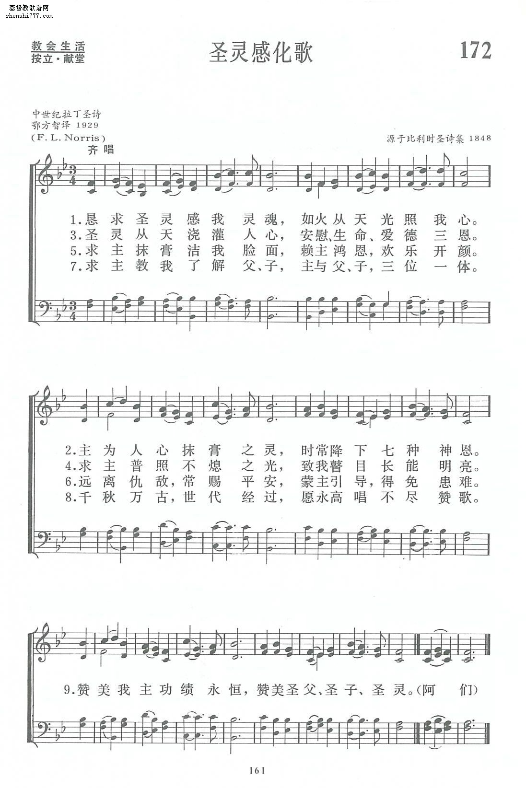

0231 Come, Holy Spirit, Our Souls Inspire 懇求聖靈 VENI, CREATOR SPIRITUS
|
|
懇求聖靈 Come, Holy Ghost, Our Souls Inspire
曲：九世紀拉丁歌曲
詞：Vesperale Romanum (Mechlin)，Altr. Rhabanus Maurus, c. 776-856
譯：鄂方智, 1929 |
|
1 Come, Holy Ghost, our souls inspire
and lighten with celestial fire;
thou the anointing Spirit art,
who dost thy sevenfold gifts impart.
2 Thy blessed unction from above
is comfort, life, and fire of love;
enable with perpetual light
the dullness of our mortal sight.
3 Teach us to know the Father, Son,
and thee, of both, to be but one;
that through the ages all along
this may be our endless song:
4 Praise to thine eternal merit,
Father, Son and Holy Spirit.
Amen.
Source: Lift Up Your Hearts:
psalms, hymns, and spiritual songs #231
|
懇求聖靈，感我內心；從天而來，如火光照。
你是感化抹膏之靈，賜下各樣屬靈恩賜。
聖靈從天澆灌人心，安慰、生命、愛德三恩。
求主普照不熄之光，燃亮我心，照亮我眼。
求主抹膏於我垢面，使我清潔，為主開顏。
滅絕仇敵，常賜平安：蒙主引導，得免患難。
教我認識父、子、聖靈，教我了解三位一體。
千秋萬古，永世無窮，願此永為不盡之歌。
讚美我主功績永恆，讚美聖父、聖子、聖靈。 |
http://gepu.shenshi777.com/m/view.php?aid=23786

 |
| |
|
http://www.sekiong.net/Music/SS/H154.htm
懇求聖神自天降臨  Listen
Listen
Come, Holy Ghost, our souls inspire
填詞者：Archbishop Rhabanus Maurus，776 -856
曲調：素歌 (Gregorian Chant)
教會曆在復活節後第七個禮拜天叫做五旬節或聖靈降臨節，今年的聖靈降臨節是六月七日，這首聖詩「懇求聖神自天降臨」是拉丁六大名歌之一[1]，大約在第九世紀就已出現，盛行於第十世紀，本詩的作者不詳[2]，歷代以來議論紛紛，有人說是安波羅修主教
(St. Amborse of Milan, 340 -397)、或教皇大貴勾利 (Gregory the Great, 540-604)、或查理曼大帝
(Charlemagne the Great, 742-814)[3]，但最近學者研究多認為出自馬廬斯主教(Archbishop
Rhabanus Maurus, 776 -856)。馬廬斯出生在德國梅因斯 (Mainz)，屬本篤修會，曾任富達 (Fulda)
修道院院長，寫了很多詩，並曾編德文聖經詞彙。

此詩在各種崇拜儀式中已沿用一千年，但最早在聖靈降臨節早上九點禮拜 (Terce)
時使用(徒2:15 聖靈降臨於巳時)，11世紀以後就被用於地方教會，文獻中最早的記錄是主後1049年用在法國萊姆斯大會 (Synod of Reims)。1307年已在英國使用，而且用於加冕典禮儀式中。1524年馬丁路德出版的艾福聖詩手冊(Erfurt
Enchiridia) 已有德文譯本。
英文譯本首現於1549年聖公會出版的公禱書(Book Of the Common
Prayer)，現在英文譯本雖有六十多種[4]，其中以聖公會牧師柯辛
(John Cosin, 1594-1672)於1627年出版的個人靈修詩集(Collection of Private Devotions in the
Ancient Church, Called the Hours of
Prayer)的翻譯最佳。原先柯辛只是用於個人靈修生活，後來他被任命為1662年版公禱書的編輯委員，他將這首詩加人「公禱書」中，取代於1549年出版的公禱書之譯本。

曲調 (Veni Creator, Spiritus)來自素歌，收錄於1848年比利時美克林天主教晚禱歌集
(Vesperale Romanum)和加拿大現代聖樂作曲家威蘭 (Healey Willian, 1880- 1968)
配和聲，他曾任教堂管風琴師，也改編過很多曲子如:聖詩143首「請來，請來，以馬內利」(Veni, Veni，Emanuel)，聖詩495首「主，懇求你憐憫阮」(Kyrie
Eleisonn)，聖詩 505首「聖哉，聖哉，聖哉」(Sanctus)，聖詩5O6首「上帝的羊羔」(Agnus Dei)等。
現代作曲家馬勒 (Gustav Mahler, 1911-1986)
在他的降E大調第八號「千人交響曲」中第一樂章即採用「懇求聖神自天降臨」的歌詞，巴哈也在他的「小冊集」，BWV 631、BWV
667用此曲調，取名是依據馬丁路德之德文譯本懇求聖神自天降臨(Komm, Gott Schopfer, heliger Geist)，亦收錄在「371首四部聖詠集」(371
Chorales of J. S. BaCh)第187首，清唱曲第218號「願希望的神充滿你 (Gott der Hoffnung erfulle euch)
的第五樂章[5]。
台灣教會公報第2117期1992年9月27日
https://www.umcdiscipleship.org/resources/history-of-hymns-come-holy-ghost-and-come-o-holy-spirit
“Come, Holy Ghost, Our Souls Inspire” by John Cosin The United Methodist
Hymnal 651 “Come, O Holy Spirit, Come” (“Wa wa wa Emimimo”) Yoruba praise song
The Faith We Sing, 2124
Come, Holy Ghost, our souls inspire, and lighten with celestial fire; thou
the anointing Spirit art, who dost thy sevenfold gifts impart.
Wa wa wa Emimimo Wa wa wa Alagbara; Wao, wao, wao
Come, O Holy Spirit, come; Come, almighty Spirit, come; Come, come, come.
All of them were filled with the Holy Spirit and began to speak in other
languages, as the Spirit gave them ability. Now there were devout Jews from
every nation under heaven living in Jerusalem. And at this sound the crowd
gathered and was bewildered, because each one heard them speaking in the native
language of each (Acts 2:4-6 NRSV).
The fullness of God’s promises in Jesus Christ are on display on the day of
Pentecost. As we have been swept from Christ’s death and resurrection to his
ascension, Pentecost celebrates the sending of the Holy Spirit to empower and
commission the ministry of Christ’s church. Worship professors Hoyt Hickman, Don
Saliers, Laurence Hull Stookey, and James F. White, in The New Handbook of the
Christian Year, describe Pentecost as, “a reliving of all that the Easter Season
has come to mean for the people of God . . . it is a day marking the
universality of the new age in which ‘there is neither Jew nor Greek, slave nor
free, male nor female; for you are all one in Christ Jesus’” (Hickman et al.,
109). Pentecost is the celebration of a new unity of the Spirit of the Lord with
all of God’s creation.
How then shall this new unity be reflected in the music of our worship?
The ninth-century text “Veni Creator Spiritus” has a long history of use for
the celebration of Pentecost. Attributed to Rabanus Maurus (ca. 780-856), the
archbishop of Mainz, the Latin text appeared in nine manuscripts during the
tenth century and was widely circulated in hymnals and breviaries by the twelfth
century. The 24 lines of the Latin text were frequently divided into six,
four-line stanzas with an added doxology. However, with the absence of any rhyme
scheme, the divisions were arbitrary. The English translations, of which there
are more than 50, are much the same.
John Cosin (1595-1672), an Anglican priest who became the Bishop of Durham
during the English Restoration period, provided the 1627 translation, which is
the shortest and appears most often in hymnals. Included in the ordination
service of the Book of Common Prayer (1662), Cosin’s translation replaced an
older translation, “Come, Holy Ghost, eternal God,” and became the first
postbiblical hymn to gain prominence in a musical world dominated by metrical
psalmody (Daw, 282). Some sources indicate that it may have been written for the
coronation of King Charles I in 1625, a state event at which Cosin was the
master of ceremonies (Doyle, n.p.).
The text highlights the fire descending on the disciples (Acts 2) and
then draws on the messianic characteristics found in Isaiah 11:1-3 and an
enumeration of seven spiritual gifts attributed to early Christian patristic
theologians:
wisdom, understanding, counsel, knowledge, fortitude, piety, and fear of the
Lord (Daw, 282).
Cosin links the creative work of the Spirit at creation (Genesis 1:2, stanza
2) and
the promise of the Holy Spirit as comforter (John 14:16, stanza 3).
Sung to the plainsong melody VENI CREATOR SPIRITUS, taken from the Vesperale
Romanum, Mechlin (1848), these images incorporated in this hymn have a strong
connection with both ordination and Pentecost. John Wesley (1703-1791) brought
the hymn into wider use when he included it anonymously in his Collection of
Psalms and Hymns (1738), the same year as the Wesley brothers’ “conversion,” as
V. in the section “Psalms and Hymns for Wednesday or Friday.” He also included
it in the ordinal he sent to the Methodist churches in the United States in
1784.
As United Methodist hymnologist Carlton Young notes, “Since that time it has
been included in our services of ordination of elders and consecration of
bishops” (Young, 291). The hymn gained even greater prominence when it was
included in the first edition of Hymns Ancient & Modern (1861). Its subsequent
publication in over 200 hymnals has made it one of the most important hymns for
worship at Pentecost. This hymn should not be confused with Charles Wesley’s
“Come, Holy Ghost, our hearts inspire” which first appeared in Hymns and Sacred
Poems in 1740.
While “Come, Holy Spirit, Our Souls Inspire” speaks to the historical song of
Pentecost, the unity of Christ’s church in Acts 2 calls for a wider expression
beyond that beloved hymn. The disciples’ experience at Pentecost was one of
multiple tongues. The characters of the biblical narrative do not begin speaking
in one language; rather, the native language of each person is understood by the
others. Acknowledging the biblical narrative invites worship planners and song
leaders to embrace a diverse repertoire for the celebration of Pentecost.
The western Nigerian gathering song “Wa wa wa Emimimo” (“Come, O Holy Spirt,
Come” in English) is a gift from the Church of Lord (Aladura), an
African-initiated congregation of the early twentieth century, whose name means
in Yoruba, “owners of prayer.” The text in the Yoruba language, one of the three
primary vernacular tongues of Nigeria, reflects its tonal nature with the
melodic line of the hymn imitating the high, medium, and low tones of the
language. The syllable “wa” is an imperative form of the verb meaning “to come,”
and the addition of the “o” in “wao” intensifies the petition, similar to an
exclamation point in English – “come NOW.” Unlike many other pieces from western
Africa, in this song, the soloist does not serve as the caller/initiator of the
song, but as an encourager propelling the assembly on to the next phrase
(Michael Hawn, n.p.).

Ethnomusicologist Christopher Brooks notes in the Garland Encyclopedia of
World Music that aladura hymns are drawn from various sources, including western
hymnody with substituted Yoruba texts. However, in many cases, the English texts
do not allow for the tonal variety of the language, prompting the composition of
new a
ladura compositions, as is the case with “Wa wa wa emimimo” (Brooks,
403-404). Transcribed by Taiwanese ethnomusicologist I-tō Loh (b. 1936) for the
collection African Songs of Worship (Geneva Press 1986), “Wa wa wa Emimimo” has
a strong association with Pentecost, but is used year-round as a gathering song
in Nigeria.
Both texts connect to the experience of receiving the gift of the Holy Spirit
at Pentecost and unite the biblical and historical context with the
ever-expanding repertoire of congregational song in much the same way as the
Pentecost story began the far-reaching story of the church.
Sources and Further Reading
Christopher Brooks, “Foreign Indigenous Interchange: The Yoruba,” Africa: the
Garland Encyclopedia of World Music, Ed. Ruth M. Stone (New York: Garland
Publishing Co., 1998), 400-414.
Carl Daw, Jr., Glory to God: A Companion (Louisville: Westminster John Knox,
2016).
Sheila Doyle, "Come, Holy Ghost, Our Souls Inspire." The Canterbury
Dictionary of Hymnology. Canterbury Press, accessed May 12, 2019, http://www.hymnology.co.uk/c/come,-holy-ghost,-our-souls-inspire.
C. Michael Hawn, "African Hymnody." The Canterbury Dictionary of Hymnology.
Canterbury Press, accessed February 13, 2019, http://www.hymnology.co.uk/a/african-hymnody.
Hoyt Hickman, et al., The New Handbook of the Christian Year (Nashville:
Abingdon Press, 1992).
Carlton R. Young, Companion to The United Methodist Hymnal (Nashville:
Abingdon Press, 1993).
https://en.wikipedia.org/wiki/Veni_Creator_Spiritus
From Wikipedia, the free encyclopedia
Jump to navigationJump
to search
"Veni Creator Spiritus" (Come, Creator Spirit) is a traditional Christian hymn believed
to have been written by Rabanus
Maurus, a 9th-century German monk, teacher, and archbishop. When the
original Latin text
is used, it is normally sung in Gregorian
Chant. It has been translated and paraphrased into several languages,
and adapted into many musical forms, often as a hymn
for Pentecost or for other occasions that focus on the Holy
Spirit.
Liturgical use[edit]
As an invocation of the Holy Spirit, Veni Creator Spiritus is sung in the Catholic
Church during liturgical celebrations on the feast of Pentecost (at
both Terce and Vespers).
It is also sung at occasions such as the entrance of Cardinals to
the Sistine
Chapel when they elect
a new pope, as well as at the consecration of bishops,
the ordination of priests,
the sacrament of Confirmation,
the dedication of churches, the celebration of synods or
councils, the coronation of
monarchs, the profession of
members of religious
institutes, and other similar solemn events. There are also Catholic
traditions of singing the hymn on New Year's Day for plenary indulgence.
Martin Luther used the hymn as the basis for his Pentecost chorale "Komm,
Gott Schöpfer, Heiliger Geist", first published in 1524.
Veni Creator Spiritus is also widely used in the Anglican
Communion and appears, for example, in the Ordering of Priests and in
the Consecration of Bishops in the Book
of Common Prayer (1662), and in the Novena to The Holy Ghost in Saint
Augustine's Prayer Book (1947).[1] The
translation "Come Holy Ghost, our souls inspire" was by Bishop John
Cosin in 1625, and has been used for all subsequent British
coronations. Another English example is "Creator Spirit, by whose aid",
written in 1690 by John
Dryden and published in The Church Hymn Book (1872, n. 313).
Many variations exist. The following Latin and English versions were
recently published by the Vatican:
-
Latin text[2]
|
-
English version[2]
|
-
Veni, creator Spiritus,
-
mentes tuorum visita,
-
imple superna gratia,
-
quae tu creasti, pectora.
|
-
Come, Holy Ghost, Creator, come
-
from thy bright heav'nly throne;
-
come, take possession of our souls,
-
and make them all thine own.
|
-
Qui diceris Paraclitus,
-
donum Dei altissimi,
-
fons vivus, ignis, caritas,
-
et spiritalis unctio.
|
-
Thou who art called the Paraclete,
-
best gift of God above,
-
the living spring, the living fire,
-
sweet unction and true love.
|
-
Tu septiformis munere,
-
dextrae Dei tu digitus,
-
tu rite promissum Patris,
-
sermone ditans guttura.
|
-
Thou who art sevenfold in thy grace,
-
finger of God's right hand;
-
his promise, teaching little ones
-
to speak and understand.
|
-
Accende lumen sensibus,
-
infunde amorem cordibus,
-
infirma nostri corporis
-
virtute firmans perpeti.
|
-
O guide our minds with thy blest light,
-
with love our hearts inflame;
-
and with thy strength, which ne'er decays,
-
confirm our mortal frame.
|
-
Hostem repellas longius
-
pacemque dones protinus;
-
ductore sic te praevio
-
vitemus omne noxium.
|
-
Far from us drive our deadly foe;
-
true peace unto us bring;
-
and through all perils lead us safe
-
beneath thy sacred wing.
|
-
Per te sciamus da Patrem
-
noscamus atque Filium,
-
te utriusque Spiritum
-
credamus omni tempore.
|
-
Through thee may we the Father know,
-
through thee th'eternal Son,
-
and thee the Spirit of them both,
-
thrice-blessed three in One.
|
|
In some instances, a doxology follows:[3] |
-
Deo Patri sit gloria,
-
et Filio qui a mortuis
-
surrexit, ac Paraclito,
-
in saeculorum saecula.
|
-
All glory to the Father be,
-
with his coequal Son;
-
the same to thee, great Paraclete,
-
while endless ages run.
|
-
Amen.
|
-
Amen.
|
Notable
English translations[edit]
Since the English
Reformation in the 16th century, there have been more than fifty
English-language translations and paraphrases of Veni Creator Spiritus.[4] The
version attributed to Archbishop
Cranmer, his sole venture into English verse, first appeared in the
Prayer Book Ordinal of 1550. It was the only metrical hymn included in the
Edwardian liturgy. In 1561 John
Day included it after the psalms in his incomplete metrical psalter of
that year. From 1562 onwards, in The Whole Booke of Psalmes, Day
printed Cranmer's version at the start of the metrical paraphrases.[5] In
terms of concision and accuracy, Cranmer compares poorly with Luther.
Cranmer's sixth stanza, which mentions the Last
Judgement and religious strife within Christendom ("the last dreadful
day... strife and dissension..."), was a new addition, with no parallel in
the Latin original or in Luther's version.
The version included in the 1662 revision of the Book of Common Prayer compressed
the content of the original seven verses into four (with a two-line
doxology), but retained the Latin title. It was written by Bishop John
Cosin for the coronation of
King Charles
I of Great Britain in 1625.[6] The
same words have been used at every coronation since, sung by the choir
after the Creed and
before the Anointing.[7] The
first verse is:
-
Come, Holy Ghost, our souls inspire,
-
and lighten with celestial fire.
-
Thou the anointing Spirit art,
-
who dost thy sevenfold gifts impart.[8]
Another well-known version by the poet John
Dryden was first published in his 1693 work, Examen Poeticum.
It may be sung to the tune "Melita"
by John
Bacchus Dykes,[9] and
excerpts of the Dryden text have been set to the German hymn tune "Lasst
uns erfreuen".[10] Dryden's
first verse is:
-
Creator Spirit, by whose aid
-
The world's foundations first were laid,
-
Come, visit every pious mind;
-
Come, pour thy joys on humankind;
-
From sin and sorrow set us free,
-
And make thy temples worthy thee.
German paraphrases[edit]
Martin Luther wrote a paraphrase in
German, "Komm,
Gott Schöpfer, Heiliger Geist" (literally: Come, God Creator, Holy
Ghost) as a Lutheran
hymn for Pentecost,
first published in 1524, with a melody derived from the chant of the Latin
hymn. It appears in the Protestant hymnal Evangelisches
Gesangbuch as EG 126.
Heinrich Bone published his own German paraphrase in 1845, "Komm,
Schöpfer Geist, kehr bei uns ein" (literally: Come, Creator Spirit,
visit us), also using an adaptation of the plainchant melody. It appears
in the German Catholic hymnal Gotteslob (2013)
and its 1975 predecessor.
A rhymed German translation or paraphrase, "Komm, Heiliger Geist, der
Leben schafft" (literally: Come, Holy Spirit who creates life), was
written by Friedrich
Dörr to a melody close to the Gregorian melody, published in 1972. It
became part of the common German Catholic hymnal Gotteslob in
1975, and of its second edition in 2013, as GL 342 in the section "Pfingsten
– Heiliger Geist" (Pentecost – Holy Spirit).
Musical settings[edit]
Over the centuries, Veni Creator Spiritus has inspired the following works
by notable composers, in approximate chronological order:
-
Jehan Titelouze, Veni creator (1623)
-
Guillaume-Gabriel Nivers, "L'hymne de la Pentecôte" in his 2e
Livre d'Orgue (1667)
-
Marc-Antoine Charpentier, 5 settings:
- Veni creator Spiritus, H.54,
for 3 voices (or chorus), 2 violins and continuo (1670s)
- Veni creator Spiritus, H.66,
for soloists, chorus, flutes, bassoons, strings and continuo (1680s)
- Veni creator Spiritus, H.69,
for 1 voice and continuo (1680s)
- Veni creator Spiritus, H.70,
for 1 voice and continuo (late 1680s)
- Veni creator Spiritus, H.362,
for 3 voices and continuo (early 1690s?)
-
Michel-Richard Delalande, Veni creator Spiritus S 14 (1689)
or S 14 bis (1684)
-
Johann Pachelbel, chorale prelude for organ, on "Komm, Gott Schöpfer,
Heiliger Geist" (1693)
-
Nicolas de Grigny, Veni creator en taille à 5, fugue à 5 for
organ (5 versets) (1699)
-
Henry Desmarest, Veni creator, for soloists, chorus and
orchestra (early 1700s)
-
Johann Gottfried Walther, chorale prelude for organ, on "Komm, Gott
Schöpfer, Heiliger Geist" (early 1700s)
-
Johann Sebastian Bach harmonized "Komm, Gott Schöpfer, Heiliger
Geist" for his four-part chorale BWV
370, and also used the tune as the basis for his chorale prelude for
organ BWV
631 (1708–1717), which he later extended as BWV
667 (1750).
-
Charles-Hubert Gervais, Veni creator (1723)
-
Ferdinando Bertoni, Veni creator (1765)
-
François Giroust, Veni creator à 4 voix et orchestre (1787)
-
Camille Saint-Saëns, Veni creator à 4 voix (1858)
-
Hector Berlioz, Veni creator à cappella H 141 (c.1861–1868),
a motet for
women's voices to the Latin text
-
César Franck, Veni creator for two voices (TB) and organ, FWV
68 (1876)
-
Anton Bruckner harmonized the original tune for voice and organ as
his motet WAB
50 (c. 1884).
-
Augusta Holmès, Veni creator for tenor and mixed chorus, IAH
74 (1887)
-
Alexandre Guilmant, organ works in L'Organiste liturgiste,
Op. 65, Book 1 (1884) and Book 10 (1899)
-
Gustav Mahler set the Latin text to music in Part I of his Symphony
No. 8 in E-flat major (1906).
-
Filippo Capocci, Organ Fantasia on Veni Creator Spiritus (1907)
-
Maurice Duruflé used the chant tune as the basis for his symphonic
organ composition "Prélude, Adagio et Choral varié sur le thème du Veni
Creator", Op. 4 (1926/1930).
-
Karol Szymanowski, Veni creator for soprano, mixed chorus,
organ and orchestra, Op. 57 (1930)
-
Marcel Dupré, "Komm, Gott Schöpfer, Heiliger Geist" among his organ
settings of 79 Chorales, Op. 28, No. 46 (1931), and Veni
creator in the organ suite Le Tombeau de Titelouze, Op. 38,
No. 8 (1942)
-
Jeanne Demessieux, Veni creator, Toccata for Organ (1947)
-
Zoltán Gárdonyi, Partita for Organ Veni creator spiritus (1958)
-
Paul Hindemith concluded his Concerto for Organ and Orchestra with a
Phantasy on Veni Creator Spiritus (1962).
-
Krzysztof Penderecki wrote a motet for mixed choir (1987).
-
Cristóbal Halffter set the text for chorus and orchestra (1992).
-
Karlheinz Stockhausen used the text in the second hour of his Klang cycle
(2005), in a piece for two singing harpists titled Freude (Joy),
Op. 82.
-
Arvo Pärt, Veni creator (2006)
-
Zsolt Gárdonyi, Toccata for Organ Veni creator spiritus (2020)
References[edit]
-
^ Saint Augustine's
Prayer Book (1967) [1947]. (Revised ed.) West Park, New York:
Holy Cross Publications. p. 316.
-
^ Jump
up to:a b "Mass
and Rite of Canonisation" (PDF). vatican.va.
pp. 32–35. Retrieved 18
October 2015.
-
^ "Come,
Holy Ghost, Creator, Come / Veni Creator Spiritus". Breviary
Hymns. 7 January 2013.
Retrieved 4 June 2017.
-
^ Charles S. Nutter;
Wilbur F. Tillett. The
Hymns and Hymn Writers of The Church (Smith & Lamar, 1911),
p. 108.
-
^ Beth Quitslund, The
Reformation in Rhyme: Sternhold, Hopkins and the English Metrical
Psalter (Ashgate, 2008), pp. 204, 229.
-
^ Ivan D. Aquilina, The
Eucharistic Understanding of John Cosin and His Contribution to the
1662 Book Of Common Prayer (University of Leeds, 2002), p.
6.
-
^ "Guide
to the Coronation Service". Westminster Abbey. Archived 11
December 2013.
-
^ "The
Coronation of Queen Elizabeth II". Oremus.org.
Retrieved 14
October 2020.
-
^ "Creator
Spirit, by whose aid". Hymnary.org.
Retrieved 14
October 2020.
-
^ "Creator
Spirit, By Whose Aid" (PDF). Oregon
Catholic Press. Retrieved 9
May 2017.
http://dhk.hkskh.org/stmary/ministry_article.aspx?id=571
|
|
|
|
|
詩班獻唱
Come,
Holy Ghost（Composer:
Thomas Attwood （1765-1838））
Lyrics: Come, Holy Ghost, our souls inspire, and lighten with celestial
fire; Thou
the
anointing Spirit art, who dost thy sevenfold gifts impart. Thy blessed
unction from above is comfort, life and fire of love. Enable with perpetual
light, the dullness of our blinded sight, anoint and cheer our soiled face
with the abundance of thy grace. Keep far our foes, give peace at home,
where thou art guide no ill can come. Teach us to know the Father, Son, and
Thee, of Both, to be but One; that through the agea all along. This may be
our endless song, praise to thy eternal merit, Father, Son, and Holy Spirit.
Amen.
中文譯詞：（普天頌讚《聖靈感化歌》）
懇求聖靈感我靈魂，如火從天光照我心；主為人心抹膏之靈，時常降下七種神恩。
聖靈從天澆灌人心，安慰生命愛德三恩；求主普照不熄之光，致我瞽目長能明亮。
求主抹膏潔我臉面，賴主鴻恩歡樂開顏；遠離仇敵常賜平安，蒙主引導得免患難。
求主教我瞭解父子，主與父子三位一體；千秋萬古世代經過，願永高唱不盡讚歌。
讚美我主功績永恆，讚美聖父聖子聖靈；阿們。
簡介： Thomas
Attwood （1765-1838）是莫扎特其中一位最得意的學生，曾任英國皇家音樂學院的教授，而今日詩班所獻唱的這首《聖靈感化歌》，是他眾多作品中，較為明顯受到莫扎特影響的傑作之一，是以舊詞新曲的形式，將古老傳統以修道院士們所頌唱素歌，演化成為層次鮮明感動人心的英國教會傑作。歌詞方面，包含著對主賜聖靈的祈禱和讚美，當中提及的「七種神恩」，詳細情形可參考《以賽亞書 11:1-5》，願弟兄姊妹都能夠透過聖靈降臨日的崇拜過程，領受聖靈動工的啟發，在日常生活中時刻都能平安喜樂地為主作美好見證，。
聖餐獻唱
O Holy Spirit, Lord
of Grace（By Dr.
Christopher Tye (1505 – 1572)；Edited by Gerald H. Knight
(1908-1979)；Lyricist: Charles Coffin (1676-1749)）
Lyrics: O
Holy Spirit, Lord of grace, Eternal source of love. Inflame, we pray, our
inmost hearts with fire from heav’n above, as thou dost join with holiest
bonds, The Father and the Son, so fill us all with mutual love and knit our
hearts in one.
作者簡介： 克里斯托弗• 泰伊Christopher
Tye （1505 -
1572）分別於劍橋大學和牛津大學取得其音樂系雙博士學位，是英國著名的作曲家，曾擔任伊利大教堂的聖樂部部長及管風琴師。相傳他是英王亨利八世的兒子---愛德華六世國王的音樂老師。伊利莎白女王時代，他一直參與英國國教會（聖公會）的音樂事工，包括創作了多首以詩篇為基礎的頌及讚美詩，直至1573年返回天家為止。
參考經文：使徒行傳Acts
2:1-4a, 42-47（歌詞靈感源自此段經文）
五旬節到了，門徒都聚集在一處。忽然從天上有響聲下來，好像一陣大風吹過，充滿了他們所坐的屋子。又有舌頭如火焰顯現出來，分開落在他們各人頭上。他們就都被聖靈充滿。都恆心遵守使徒的教訓、彼此交接、擘餅、祈禱。眾人都懼怕，使徒又行了許多奇事神蹟。信的人都在一處、凡物公用，並且賣了田產家業，照各人所需用的分給各人。他們天天同心合意恆切的在殿裡，且在家中擘餅，存著歡喜誠實的心用飯，讚美神，得眾民的喜愛。主將得救的人，天天加給他們。 |
https://www.hymnologyarchive.com/veni-creator-spiritus
Veni Creator Spiritus
translated as
Komm, Gott Schöpfer, Heiliger Geist
Creator Spirit, Holy (Heavenly) Dove
Come, Holy Ghost, our souls inspire
Creator Spirit, by whose aid
Come, O Creator Spirit blest
Come, Holy Ghost, Creator blest
O Holy Spirit, by whose breath
with
VENI CREATOR SPIRITUS
KOMM, GOTT SCHÖPFER
MELCOMBE
I. Latin Authorship (Text)
This hymn for the Holy Spirit ranks among the most highly esteemed examples
in the Latin language, with its text and tune both being preserved and performed
for more than a millennium. Edgar C.S. Gibson, writing at the end of the
nineteenth century, said this hymn “has taken deeper hold of the Western Church
than any other mediaeval hymn, the Te Deum alone excepted.”[1] It was most
likely written by Rabanus (or Hrabanus) Maurus (ca. 780–856), an important
cleric in the time of Charlemagne (742–814) and his successors, who studied
under Alcuin of Tours (ca. 735–804) and later became Abbot of Fulda, then the
Archbishop of Mainz. Rabanus would have been a younger contemporary of Theodulf
of Orléans (ca. 760–821).


Although his authorship of “Veni Creator Spiritus” is not completely certain,
the hymn is credited to him for several reasons. A summary of the attribution
was explained in part by Latin scholar Stephen A. Hurlbut:
The evidence for his hymns depends on the first edition of them by Brower
(Mainz, 1617), from a Fulda manuscript, now lost, except for a small fragment at
Einsiedeln, which proves it to have been of the 10th century.[2]
In addition, the hymn has elements in common Rabanus’ treatise on the Holy
Spirit (chapter 3 of De Universo, c. 844; see J.P. Migne, Patrologiae, Series
Latina, vol. 111, cols. 23-26: HathiTrust). It relates to a theological debate
from the time period pertaining to the procession of the Spirit from both the
Father and the Son (filioque), which was discussed at a synod at Aachen in 809.
In the hymn, this appears in the line “Te utriusque Spiritum” (“You are the
Spirit of both”). A detailed study of the nuance of the Latin text by Heinrich
Lausberg in 1979 showed key similarities in language to other works by Rabanus.
Although some scholars in the nineteenth century cast doubt on Rabanus’
authorship (see especially Julian, 1892), a resurgence of confidence in the
ascription followed in the twentieth.
II. Latin Authorship (Tune)
A somewhat different issue surrounds the origins of the plainchant melody, a
tune in the mixolydian scale. Because the same melody is also closely associated
with the older text “Hic est dies verus Dei,” attributed to Ambrose of Milan,
some scholars believe the melody was originally intended for that text and was
adapted later to fit “Veni Creator Spiritus.” Guido Maria Dreves, an
accomplished scholar of Latin manuscripts, studied the Ambrosian materials in
the Biblioteca Trivulziana in Milan and notated what he believed to be a
faithful reconstruction of the original melody, in comparison to examples of
“Veni Creator Spiritus” from the 12th and 13th centuries (Fig. 1; Dreves’
reconstruction follows example E).
View fullsize aureliusambrosiu02drev_orig_0137a.jpg View fullsize Fig. 1.
Aurelius Ambrosius, der Vater des Kirchengesanges: Eine hymnologische Studie (Freiburg
im Breisgau: Herder, 1893), pp. 123-124 (see also p. 136). Fig. 1. Aurelius
Ambrosius, der Vater des Kirchengesanges: Eine hymnologische Studie (Freiburg im
Breisgau: Herder, 1893), pp. 123-124 (see also p. 136).
It is worth noting how Dreves only provided one example in his book of a
melodic setting of “Hic est dies verus Dei,” from 1619, whereas the four
examples from “Veni Creator Spiritus” are much older. Caution must be urged in
attempting to determine a chain of succession from such an old musical
tradition. Music scholar Manuel Erviti, writing in 1994, expressed his
misgivings about calling this tune Ambrosian:
The melodic traits of this tune—the drive toward the end of the first line,
intensified in the second phrase, and the resumption of this melodic activity at
the beginning of the third phrase—are not Ambrosian. Furthermore, VENI CREATOR
SPIRITUS is, with only one exception, the only tune associated with the text
“Veni Creator Spiritus,” a fact that must be taken into consideration when
addressing the still-open question of the origins of the melody.[3]
A summary of the issues has also been laid out by Joseph Herl (2019):
Because modern musical notation developed only in the late ninth to early
tenth centuries and few early manuscripts survive, it is impossible to tell when
or where this tune was composed. And because musical surveys of surviving
manuscripts are currently limited in scope, we cannot even map the distribution
of the tune in the surviving sources. One of the earlier manuscripts, though, in
which it appears is the “Portiforium of St. Wulstan” (Cambridge, Corpus Christi
College 391), which dates 1065–66. Because the tune is written in [adiastematic]
neumes, exact pitches cannot be ascertained, although it is clearly the same
tune.[4]
III. Latin Manuscripts
As mentioned above, manuscripts carrying the tune date as early as ca. 1065,
as in Cambridge Corpus Christi College MS 391, page 251 (Fig. 2), except this
early example uses a rudimentary form of notation called adiastematic neumes,
meaning the markings are only intended to show the general shape or direction of
the melody without attempting to convey actual pitches.[5] This kind of notation
would have been an aid to memorization. In this MS, the notation only appears
interlined with the first and third stanzas. The text follows the expected six
stanzas (see section IV below) and adds the first line of an extraneous stanza
“Dudum sacrata pectora,” which can be seen in full in the preceding column.

View fullsize Fig. 2. Cambridge, Corpus Christi College, Parker Library, MS
391, p. 251 ( website ). Fig. 2. Cambridge, Corpus Christi College, Parker
Library, MS 391, p. 251 (website).
For additional musical examples, see Dreves, Aurelius Ambrosius (1893), pp.
123-124 (Fig. 1), where he included four from the 12th and 13th centuries, and
see Bruno Stäblein (1956), vol. 1, no. 17, which is an example of “Hic est dies
verus Dei” from Milan, Biblioteca Trivulziana MS 347, fols. 226b–29a.
For manuscripts of the text, see especially Dreves, Analecta Hymnica, vol. 50
(1907), which lists several examples from the 10th century, one of which was
examined in more detail in his vol. 2 (1888). See also the description of
manuscripts and variants by Edgar Gibson (1892).
IV. Notable Publications in Latin
Edgar C.S. Gibson (1892) argued the original text contained only six stanzas,
as below, with the sixth (“Per te sciamus da Patrem”) being a proper doxology.
Any other stanzas are later additions.
Veni Creator Spiritus, Mentes tuorum visita, Imple superna gratia Quae Tu
creasti pectora.
Qui Paraclitus diceris, Donum Dei altissimi, Fons vivus, ignis, caritas, Et
spiritalis unctio.
Tu septiformis munere, Dextrae Dei Tu digitus, Tu rite promissum Patris,
Sermone ditas guttura.
Accende lumen sensibus, Infunde amorem cordibus, Infirma nostri corporis
Virtute firmans perpetim.
Hostem repellas longius, Pacemque dones protinus, Ductore sic Te praevio,
Vitemus omne noxium.
Per Te sciamus, da, Patrem, Noscamus atque Filium, Te utriusque Spiritum
Credamus omni tempore.
Come, Creator Spirit, Visit your souls, Fill with heavenly grace The hearts
you have created.
You who are called Helper, Gift of God most high, Fount of life, fire,
charity, And spiritual unction.
You, seven-fold gift, Finger of God’s right hand, You were duly promised by
the Father, Enriching throats with speech.
Kindle light in our minds, Infuse love in our hearts; The weaknesses of our
bodies Strengthen with perpetual power.
Repel the enemy far away, And peace bestow on us continually: So with you,
the leader, preceding us, We may shun all evil.
Grant us, through you, may we know the Father, And know also the Son, And you
are the Spirit of both; May we trust at all times.
According to Gibson, the hymn appeared in print as early as 1493 in editions
of the Breviarium printed in Basel (Fig. 3) and in Augsburg, both of those
containing just six stanzas.


The 1617 edition of the text by Browero (Fig. 4) contained the usual six
stanzas with an added stanza beginning “Praesta hoc pater piissime,” of unclear
origins; apparently it was included in the Fulda manuscript, 10th century, he
used as his basis. In Browero’s edition, the hymn was appointed for Pentecost.
This version omitted “ignis” (“fire”) from the second stanza.
View fullsize Fig. 3. Breviarium Romanum (Basel, 1493). Fig. 3. Breviarium
Romanum (Basel, 1493).
View fullsize Fig. 4. Christophero Browero, Venantii Honorii Clementiani
Fortunati … Carminum, epistolarum, expositionum libri XI … Accessere Hrabani
Mauri Fuldensis ... Poemata Sacra (Moguntiae: Bernardi Gualtheri, 1617). Fig. 4.
Christophero Browero, Venantii Honorii Clementiani Fortunati … Carminum,
epistolarum, expositionum libri XI … Accessere Hrabani Mauri Fuldensis ...
Poemata Sacra (Moguntiae: Bernardi Gualtheri, 1617).
The Roman church introduced several alterations to this hymn and others,
under the guidance of Pope Urban VIII, starting with the Breviarium Romanum of
1632 (1640 ed. shown at Fig. 5). This version includes a transposition of the
words “Qui diceris Paraclitus,” “Altissimi donum Dei,” “Digitus paternae
dexterae,” and the slight change at “Teque utriusque Spiritum.” The additional
seventh stanza, a doxology beginning “Deo Patri sit gloria,” dates before 1525.
These alterations have been in continuous use in the Roman church ever since.

View fullsize Fig. 5. Breviarium Romanum (Lucernae, 1640). Fig. 5. Breviarium
Romanum (Lucernae, 1640).
Regarding the melody, many hymnals use a particular edition of the melody as
it was printed in Vesperale Romanum (Mechliniae: P.J. Hanicq, 1848 | Fig. 6).
Hymnologist Austin Lovelace explained the significance of this edition:


The Mechlin (Belgium) collection Vesperale Romanum, 1848, was an attempt to
bring back to the French Roman Catholic churches the plainsong idiom, which had
fallen into disuse. The melodies were simplified to make them more usable by
singers not accustomed to the more melismatic and florid style.[6]
View fullsize Vesperale_romanum_cum_psalterio_1848-299.jpg View fullsize Fig.
6. Vesperale Romanum (Mechliniae: P.J. Hanicq, 1848). Fig. 6. Vesperale Romanum
(Mechliniae: P.J. Hanicq, 1848).
Many hymnals use a particular arrangement of this melody made by Healey
Willan (1880–1968) for The Book of Common Praise (1938).
V. Textual Analysis
Gibson noted how this hymn contains a possible borrowing from the older Latin
hymn “O Lux beata Trinitas,” which contains the line “Infunde lumen cordibus,”
while the lines “Infirma nostri corporis / Virtute firmans perpeti” are a direct
borrowing from “Veni Redemptor Gentium,” both hymns being either written by or
attributed to Ambrose of Milan.
Scripturally, the opening line of the hymn, appealing to the Creator Spirit,
takes its cue from passages such as
Genesis 1:2, where the Spirit is described as being actively present in
Creation.
Passages such as Ezekiel 11:19 speak of the way the Spirit indwells the heart.
The notion of Spirit as “Paraclete” comes from John 14:16, translated
alternately as “comforter,” “helper,” or “advocate” (see also Rom. 8:26).
John 6:63 says “It is the Spirit who gives life”; the Spirit appears
as fire (Acts 2:3), it produces an attitude of charity (Gal. 5:22-23), and it is
associated with fervor or zeal (Acts 1:8, Rom. 12:11, 2 Tim. 1:6-7).
The seven-fold gift of the Spirit is in reference to Isaiah 11:1-2
(wisdom, understanding, counsel, fortitude, knowledge, piety, and fear of the
Lord).
Although in the Bible Jesus is the one described as sitting at God’s right
hand, the description of the Spirit as the finger of God’s right hand is
probably a nod to the Pentecost account at Acts 2:33, which says “Being
therefore exalted at the right hand of God, and having received from the Father
the promise of the Holy Spirit, he has poured out this that you yourselves are
seeing and hearing” (ESV). The next two lines of the Latin likewise refer to
Pentecost.
The Spirit is described in Scripture as an illuminator (Dan. 5:14, Heb. 6:4,
Jn. 16:13-16),
a giver of love (Gal. 5:22-23), and
a giver of strength (Eph. 3:16).
The Spirit plays an important role in
our protection from evil (Eph. 6:10-20), and the
Spirit brings peace (Is. 32:15-18; Rom. 14:17, 15:13).
VI. Translation: Martin Luther
Martin Luther (1483–1546) translated this hymn into German as “Komm, Gott
Schöpfer, Heiliger Geist,” first printed in Erfurt in 1524 in competing editions
by Johannes Loersfeld (Fig. 7) and Matthes Maler.
View fullsize Luther-Enchiridion-Loersfeld-1524-39.jpg View fullsize Fig. 7.
Eyn Enchiridion oder Handbüchlein (Erfurt: Loersfeld, 1524). Fig. 7. Eyn
Enchiridion oder Handbüchlein (Erfurt: Loersfeld, 1524).
Ulrich S. Leupold, editor of Luther’s hymns for Luther’s Works, vol. 53
(1965), explained Luther’s approach to the Latin:
Several German translations had been made before Luther wrote his, the last
by Thomas Münzer. But whereas Münzer had tried to smooth and fill in the brevity
of the Latin text, Luther was intent on preserving the terse and compact style
of the original. In fact, he tightened the logical sequence by exchanging the
third and fourth stanzas and omitting the sixth. By this device, he obtained
three [pairs] of two stanzas each plus a doxology. The first two stanzas are a
petition to the Holy Ghost to fill the hearts of the singers, the third and
fourth ask for the gifts of the Spirit, especially for love, and the fifth and
sixth seek preservation in the true faith.[7]
Luther’s seventh stanza is probably based on the Latin doxology “Deo Patri
sit gloria” (as in Fig. 5 above). His version of the melody was entirely
syllabic, removing all melismas from the plainchant.
Also in 1524, this hymn was included in a choral arrangement by Luther’s
colleague Johann Walter, published in Geystliche Gesangk Buchleyn (Wittenberg:
J. Walter, 1524 | Fig. 8). In Walter’s arrangement, the melody (in the tenor
part book) was highly ornamented with extended melismas. This would not have
been sung congregationally.
View fullsize KGSHG-Walter-1524a2.png View fullsize Fig. 8. Geystliche
Gesangk Buchleyn (Wittenberg: J. Walter, 1524). Fig. 8. Geystliche Gesangk
Buchleyn (Wittenberg: J. Walter, 1524).
Luther revised his melody, and this revision is believed to have appeared
first in Geistliche Lieder printed by Joseph Klug in 1529 (now lost). The
material from this collection was reprinted by Klug in 1533 (Fig. 9). The
revised melody had also appeared in an edition of Geistliche Lieder printed in
Erfurt in 1531. Luther’s revision, known in hymnals as KOMM GOTT SCHÖPFER, more
closely resembles the Latin plainchant than what had appeared in 1524.
View fullsize KGSHG-Klug-1533_0002a.jpg View fullsize Fig. 9. Geistliche
Lieder auffs new gebessert ( Wittenberg: J. Klug, 1533). Fig. 9. Geistliche
Lieder auffs new gebessert (Wittenberg: J. Klug, 1533).
Regarding Luther’s adaptation of the Latin chant, Lutheran scholar Paul
Westermeyer noted, “The simplification and modifications are not superficial.
They point to well-grounded congregational instincts.”[8]
Luther’s translation of the Latin has in turn been translated into English
many times. The most well known of these translations is “Creator Spirit, Holy
Dove,” by Richard Massie (1800–1887), first published in Martin Luther’s
Spiritual Songs (London: Hatchard & Son, 1854 | Fig. 10).


View fullsize CreatorSpirit-MLSS-1855_0001a.jpg View fullsize Fig. 10. Martin
Luther’s Spiritual Songs (London: Hatchard & Son, 1854). Fig. 10. Martin
Luther’s Spiritual Songs (London: Hatchard & Son, 1854).
In his preface, page ix, Massie described his approach to the translation:
My first aim has been to give the meaning of the original with accuracy and
fidelity, for if these be essential to every good translation, they seem to be
especially so to the translation of hymns like Luther’s; since the slightest
mistake, or, in some cases, even the change of a word, might involve the change
of a doctrine, and thus destroy the interest which they possess, as a short and
plain Epitome of the great Reformer’s views.
In Lutheran hymnals in the United States, Massie’s translation is often
adopted into combinations with other translations, especially in versions
starting with an alteration of Massie’s first stanza, “Creator Spirit, heavenly
Dove.” This alteration apparently originates with the American Lutheran Hymnal
(1930 | Fig. 11), where it is said to be altered by “H.B.”

View fullsize Fig. 11. American Lutheran Hymnal (Columbus, OH: Lutheran Book
Concern, 1930). Fig. 11. American Lutheran Hymnal (Columbus, OH: Lutheran Book
Concern, 1930).
VII. Translation: John Cosin
One of the oldest and most enduring translations from Latin into English is
“Come, Holy Ghost, our souls inspire,” by John Cosin (1595–1672), a longtime
minister at various levels in the Church of England, lastly as the Bishop of
Durham. His metrical translation, “Come, Holy Ghost, our souls inspire,” was
first published in A Collection of Private Devotions (London: R. Young, 1627 |
Fig. 12), when he was rector of the wealthy parish of Brancepath in Durham. In
that collection, it was part of the materials intended for Terce (the third
hour, 9:00 a.m.; see also Acts 2:15). Cosin’s text was given in eighteen lines,
or nine rhyming couplets, without music. It is said to have been composed for
the coronation of Charles I (27 March 1625), for which Cosin acted as master of
ceremonies and directed the choir; the hymn was included in the king’s
manuscript copy of the service.[9]


View fullsize ComeHolyGhost1-CltPrvDev1627.jpg View fullsize Fig. 12. A
Collection of Private Devotions (London: R. Young, 1627). Fig. 12. A Collection
of Private Devotions (London: R. Young, 1627).
Cosin’s approach to the Latin is fairly loose, but it includes many of the
original ideas, such as the seven-fold gifts, the “blessed unction,” the
three-fold impartation given here as “comfort, life, and fire of love,” the gift
of grace, a petition for peace and deliverance from evil, and an invocation of
the Trinity “through the ages.” In the first line, “inspire” means “breathe
into” rather than the more general sense of motivation. Sheila Doyle noted
Cosin’s shift in emphasis regarding the nature of evil and peace: “The line
‘Keep far our foes, give peace at home’, though appropriate to troubled times,
misrepresents the Latin, which asks for protection from spiritual peril and for
inward peace.”[10]
Methodist scholar Fred D. Gealy wrote, “its simplicity and restraint together
with its secure position in the liturgy have enabled it to subordinate other,
perhaps better, translations to itself.”[11] Similarly, Erik Routley noted,
“several other translations exist, all of which are closer than this to the
original. But this is the one which has the lyric power and the imaginative
sweep.”[12] John Webster Grant, whose own popular translation is given below,
was more inclined to recognize the limitations of Cosin’s version, writing,
“Cosin’s 1627 translation of the ‘Veni Creator’ has stood the test of time so
well that proposing an alternative required considerable temerity. Its appeal
today, however, is more that of a deservedly venerated antique than of a hymn
expressing Christian faith in language natural to the twentieth century.”[13]
Several years after writing his hymn, Cosin was involved with the revision of
the Book of Common Prayer. His text was thus included in the venerable 1662
edition (Fig. 13), appointed for the consecration of bishops, given as one of
two options for a metrical version of “Veni Creator Spiritus.” The other, “Come,
Holy Ghost, eternal God,” is older, first included in The Forme and Maner of
Makyng and Consecratyng of Archebishoppes, Bishoppes, Priestes, and Deacons
(1549), then incorporated into the 1552 revision of the Book of Common Prayer.
Together, these two versions of “Veni Creator Spiritus” were the only two
metrical hymns provided in the Book of Common Prayer.
BookofCommonPrayer1662-Wing-B3622-860_08-p1to324-1-313.jpg
BookofCommonPrayer1662-Wing-B3622-860_08-p1to324-1-313b.jpg
BookofCommonPrayer1662-Wing-B3622-860_08-p1to324-1-314.jpg
BookofCommonPrayer1662-Wing-B3622-860_08-p1to324-1-314b.jpg Fig. 13. Book of
Common Prayer (1662).
VIII. Translation: John Dryden
Another English translation in common use is the one by John Dryden
(1631–1700), a professional poet and playwright who is generally not known to
have produced religious works, save for a period of about ten years starting in
1682. His metrical translation “Creator Spirit, by whose aid” was first
published in Examen Poeticum: Being the Third Part of Miscellany Poems (London:
Jacob Tonson, 1693 | Fig. 14). The original text consisted of rhymed couplets in
iambic tetrameter (lines of 8s), grouped into seven stanzas of varying lengths,
including a stanza with a triple rhyme.
CreatorSpirit-ExPo1693a.jpg
CreatorSpirit-ExPo1693b.jpg
CreatorSpirit-ExPo1693b2.jpg Fig. 14. Examen Poeticum: Being the Third Part
of Miscellany Poems (London: Jacob Tonson, 1693).
Dryden’s paraphrase is faithful to the original Latin, with some elaboration,
or as Albert Bailey put it, the text “partakes of the florid quality of late
seventeenth-century literature.”[14] J.R. Watson wrote, “Its noble simplicity of
diction and its well-structured couplets are characteristic of Dryden’s poetic
art.”[15]
In the first stanza, where the Latin asks the Spirit to fill our hearts,
Dryden has injected the language of 1 Corinthians 6:19 (“Do you not know that
your body is a temple of the Holy Spirit within you?”; also 1 Cor. 3:16). In
order to avoid doctrinal confusion, some hymnals have rendered this line more
clearly as “May we your living temples be,” an alteration apparently dating from
the Lutheran Christian Worship (1993), or a similar construction.
Dryden’s second stanza includes a sublime image, “source of uncreated light,”
a turn of phrase used commonly in Orthodox literature (Greek: Ἄκτιστον Φῶς),
especially tracing to Gregory of Palamas (14th cen.), used not so much in
Western Christianity. It refers to events such as the radiance of Moses after
meeting with God (Exodus 34:29-35), the Transfiguration (Matt. 17, Mk. 9, Lk.
9), and the conversion of Paul (Acts 9). This radiant glory is described by Paul
in 2 Corinthians 3:7-11 (if “the Israelites could not gaze at Moses’ face
because of its glory, … will not the ministry of the Spirit have even more
glory?”).
The third stanza includes the unique phrase “sevenfold energy.” Carl Daw
asserted, “‘Energy’ is a reflection of the Greek word ‘dynamis,’ one of Luke’s
favorite attributes of the Spirit (e.g., Lk. 24:49; Acts 1:8),”[16] whereas
Lionel Adey felt Dryden’s language was “typifying the era of [John] Locke and
[Isaac] Newton.”[17]
Dryden’s text is a passionate plea, asking for the Holy Spirit to strongly
intervene in the life of a believer: “Come pour thy joys on human kind”;
“Sanctify us while we sing!”; “inflame and fire our hearts!”; “Chase from our
minds th’ infernal Foe,” etc. Lastly, nineteenth-century scholar Joseph Payne
pointed out some of Dryden’s expansive language:
Eternal, immortal, endless … all convey the idea of perpetual existence—they
differ in the modification of that idea. That is eternal, which always is and
cannot cease to be; immortal, which always lives, which can never die; endless,
which has no termination; … These words are very appropriately employed in the
phrases “eternal truths,” “immortal honour” (a figurative expression, since
honour is not a living being), [and] “endless fame,” i.e. glory without end.[18]
Dryden’s text was probably not intended to be used as a hymn. The first to
adopt it in this capacity seems to have been John Wesley, who included it in his
Collection of Psalms and Hymns (1738, rev. 1741, 1744 | Fig. 15). Wesley recast
the text into five stanzas of six lines, cutting the triple rhyme at the end of
stanza 3 and the last two lines of stanza 4, and the entirety of stanza 6. Most
of his alterations were sensible, but the change to “uncreated heat” is
unfortunate.
View fullsize 1744-CollectionPsalmsHymns-44.jpg View fullsize Fig. 15.
Collection of Psalms and Hymns , 3rd ed. (London: W. Strahan, 1744). Fig. 15.
Collection of Psalms and Hymns, 3rd ed. (London: W. Strahan, 1744).
With Dryden’s text having an irregular structure, hymnal compilers inevitably
have to make similar decisions on how to make it singable congregationally.
IX. Translation: Edward Caswall
Another translation in common use is the one by Catholic versifier Edward
Caswall (1814–1878), “Come, O Creator Spirit blest,” from Lyra Catholica (1849 |
Fig. 16). Caswall’s text is a faithful rendering of the Latin, line-for-line, in
seven stanzas, choosing accuracy and restraint over fervor and interpolation.
View fullsize Caswall-LyraCatholica-1849-142.jpg View fullsize Fig. 16. Lyra
Catholica (London: James Burns, 1849). Fig. 16. Lyra Catholica (London: James
Burns, 1849).
Caswall revised the text extensively for his Hymns and Poems (1873), in some
cases completely rethinking certain rhymes, making some considerable
improvements.
View fullsize Caswall-HymnsPoems-1873-2ndEd-75.jpg View fullsize Fig. 17.
Hymns and Poems , 2nd ed. (London: Burns, Oats & Co., 1873). Fig. 17. Hymns
and Poems, 2nd ed. (London: Burns, Oats & Co., 1873).
In spite of its fidelity, Caswall’s text, like other attempts at translation,
has rarely escaped editorial scrutiny. The most significant revised version was
brought about by the editors of Hymns Ancient & Modern (1861), who altered the
first line to read “Come, Holy Ghost, Creator blest,” a borrowing from the
translation by Richard Mant (Ancient Hymns, 1837). The second stanza similarly
includes Mant’s “O Comforter” rather than Caswall’s “Great Paraclete.” The
revisions were extensive, including some inversions of lines and some complete
replacements of rhyming pairs. Notice in the sixth stanza the overt reference to
the Creed and the procession of the Spirit from the Father and the Son (filioque).

View fullsize Fig. 18. Hymns Ancient & Modern (London: Novello, 1861).
Fig. 18. Hymns Ancient & Modern (London: Novello, 1861).
The editors of Hymns Ancient & Modern continued to tweak the text in
successive editions. Some hymnals incorporate lines from Robert Campbell’s
“Creator Spirit, Lord of grace” (Hymns and Anthems, 1850). The tune shown above
in Fig. 18 is MELCOMBE by Samuel Webbe (1740–1816) from An Essay on the Church
Plain Chant, Part 2 (1782 | Fig. 19). Caswall’s text is now most often set to
LAMBILLOTTE by Louis Lambillotte (1796–1855) from his Chants à Marie (Paris,
1843).

View fullsize Webbe-EssayPlainChant-Pt2-1782-39.jpg View fullsize Fig. 19. An
Essay on the Church Plain Chant, Part 2 (1782). Fig. 19. An Essay on the Church
Plain Chant, Part 2 (1782).
X. John Webster Grant
Since the nineteenth century, the newest translation with the most currency
has been “O Holy Spirit, by whose breath” by John Webster Grant (1919–2006),
written in 1968. At the time of this hymn’s composition, Grant was professor of
church history at Emmanuel College in Victoria University. He was also a member
of the committee responsible for producing the Hymn Book of the Anglican Church
of Canada and the United Church of Canada (1971 | Fig. 20), for which he
supplied four texts, including this one. Grant’s text was given in five stanzas
of four lines with a two-line doxology.
View fullsize Fig. 20. Hymn Book of the Anglican Church of Canada and the
United Church of Canada (©1971), excerpt. Fig. 20. Hymn Book of the Anglican
Church of Canada and the United Church of Canada (©1971), excerpt.
Grant later provided this rationale for writing the hymn:
The intention of offering a new version was to make the old Latin words more
immediately serviceable in contemporary worship. Since the piety of our time is
not identical with that of the ninth century, some freedom in adaptation seemed
justified. Within the limits imposed by rhyme and metre, however, an attempt has
been made to preserve the language and ideas of the original.[19]
Grant’s translation generally covers the sense of the Latin but has a greater
freedom than some other translations. Reformed scholar Bert Polman said of it,
“Although the ancient text acquires a modern face with the freshness of Grant’s
translation, the ancient and biblical images are still very much present.”[20]
Notice in stanza 3, “God’s energy,” which is a nod to Dryden. In stanza five,
like Cosin’s text, Grant has shifted the meaning away from spiritual warfare to
a less-specific “inner strife” and a call for inter-national peace.
Stanley Osborne, editor of the companion volume to the 1971 Hymn Book, gave
Grant’s version a glowing reception, saying, “The vividness and freshness of its
expression combined with its faithfulness to the spirit of the original text
marks it as one of the finest translations ever to come out of this century.[21]
by CHRIS FENNER for Hymnology Archive 22 May 2020
Footnotes: Edgar C.S. Gibson, “Veni creator spiritus,” A Dictionary of
Hymnology (London: J. Murray, 1892), p. 1207: HathiTrust
Stephen A. Hurlbut, Hortus Conclusus, Part 5 (Washington, D.C.: St. Alban’s
Press, 1931), p. 2.
Manuel Erviti, “VENI CREATOR SPIRITUS,” The Hymnal 1982 Companion, vol. 3B
(NY: Church Hymnal Corp., 1994), p. 942.
Joseph Herl, “Come, Holy Ghost, Creator blest,” Lutheran Service Book
Companion, vol. 1 (St. Louis: Concordia, 2019), p. 430, citing Grove Music
Online, “Veni Creator Spiritus” and “Sources, MS: II. Western plainchant.”
For a fuller discussion of the development of plainchant notation systems,
see for example Constantin Floros, rev. Neil K. Moran, Introduction to Early
Medieval Notation, 2nd ed. (Warren, MI: Harmonie Park Press, 2005); or Richard
Rastall, The Notation of Western Music (NY: St. Martin’s Press, 1982).
Austin Lovelace, “VENI CREATOR,” Companion to the Hymnal (Nashville: Abingdon
Press, 1970), p. 141; see also Erik Routley, “VENI CREATOR,” Companion to
Congregational Praise (1953), pp. 115-116.
Ulrich S. Leupold, “Come, God Creator Holy Ghost,” Luther’s Works, vol. 53
(Philadelphia: Fortress Press, 1965), p. 260.
Paul Westermeyer, “Creator Spirit, Heavenly Dove,” Hymnal Companion to
Evangelical Lutheran Worship (Minneapolis: Augsburg Fortress, 2010), p. 417.
Anthony Milton, “John Cosin,” Oxford Dictionary of National Biography, vol.
13 (Oxford: University Press, 2004), p. 532; also Sheila Doyle, “Come, Holy
Ghost, our souls inspire,” Canterbury Dictionary of Hymnology; the MS is
probably British Library Add MS 47184.
Sheila Doyle, “Come, Holy Ghost, our souls inspire,” Canterbury Dictionary of
Hymnology: http://www.hymnology.co.uk/c/come,-holy-ghost,-our-souls-inspire
Fred D. Gealy, “Come, Holy Ghost, our souls inspire,” Companion to the Hymnal
(Nashville: Abingdon Press, 1970), p. 141.
Erik Routley, “Come, Holy Ghost, our souls inspire,” Hymns and the Faith
(London: John Murray, 1955), p. 208.
John Webster Grant, “O Holy Spirit, by whose breath,” Companion to the Hymnal
1982, vol. 3B (NY: Church Hymnal Corp., 1994), p. 941.
Albert Edward Bailey, “Veni Creator Spiritus,” The Gospel in Hymns (NY:
Charles Scribner’s Sons, 1950), p. 239.
J.R. Watson, “Creator Spirit, by whose aid,” An Annotated Anthology of Hymns
(Oxford: University Press, 2002), p. 39.
Carl P. Daw Jr., “Creator Spirit, by whose aid,” Companion to the Hymnal
1982, vol. 3B (NY: Church Hymnal Corp., 1994), p. 938.
Lionel Adey, Hymns and the Christian Myth (Vancouver: University of British
Columbia, 1986), p. 76.
Joseph Payne, “Veni Creator,” Studies in English Poetry (London: Arthur Hall,
Virtue & Co., 1859), p. 35.
John Webster Grant, “O Holy Spirit, by whose breath,” Companion to the Hymnal
1982, vol. 3B (NY: Church Hymnal Corp., 1994), p. 941.
Bert Polman, “O Holy Spirit, by whose breath,” Psalter Hymnal Handbook (Grand
Rapids: CRC, 1998), p. 586.
Stanley L. Osborne, “Holy Spirit, by whose breath,” If Such Holy Song (Whitby,
ONT: Institute of Church Music, 1976), no. 246.
Related Resources: Veni Creator Spiritus
Christophero Browero, Venantii Honorii Clementiani Fortunati … Carminum,
epistolarum, expositionum libri XI … Accessere Hrabani Mauri Fuldensis ...
Poemata Sacra (Moguntiae: Bernardi Gualtheri, 1617): BSB/MDZ
Edgar C.S. Gibson, James Mearns & John Julian, “Veni creator spiritus,” A
Dictionary of Hymnology (London: J. Murray, 1892), pp. 1206-1211: HathiTrust
Guido Maria Dreves, Aurelius Ambrosius, der Vater des Kirchengesanges: Eine
hymnologische Studie (Freiburg im Breisgau: Herder, 1893), pp. 123-124, 136:
Archive.org
Guido Maria Dreves, Analecta Hymnica Medii Aevi, vol. 2 (1888), pp. 93-94:
HathiTrust; vol. 50 (1907), pp. 193-194: HathiTrust
Joseph Otten, “Ambrosian chant,” The Catholic Encyclopedia, vol. 1 (NY:
Robert Appleton Co., 1907), pp. 389-392: Hathitrust
Guido Maria Dreves, Hymnologische Studien zu Venantius Fortunatus und Rabanus
Maurus (Munich: J. J. Lentner, 1908): HathiTrust
Stephen A. Hurlbut, Hortus Conclusus, Part 5 (Washington, D.C.: St. Alban’s
Press, 1931), pp. 2, 14-16.
Erik Routley, “VENI CREATOR,” Companion to Congregational Praise (London:
Independent Press, 1953), pp. 115-116.
Bruno Stäblein, Monumenta Monodica Medii Aevi, vol. 1 (Kassel, 1956), no. 17.
C.E. Pocknee, “Three Latin Hymns,” HSGBI Bulletin, vol. 6, no. 4 (April
1966), p. 65.
Austin Lovelace, “VENI CREATOR,” Companion to the Hymnal (Nashville: Abingdon
Press, 1970), p. 141.
Heinrich Lausberg, Der Hymnus ‘Veni creator Spiritus’ (Opladen, 1979):
WorldCat
Ron Jeffers, Translations and Annotations of Choral Repertoire, vol. 1
(Corvallis, OR: Earthsongs, 1988).
Manuel Erviti, “VENI CREATOR SPIRITUS,” The Hymnal 1982 Companion, vol. 3B
(NY: Church Hymnal Corp., 1994), p. 942.
Joseph Herl, “Come, Holy Ghost, our souls inspire,” The Hymnal 1982
Companion, vol. 3B (NY: Church Hymnal Corp., 1994), pp. 943-945.
James L. Brauer & Joseph Herl, “Come, Holy Ghost, Creator blest,” Lutheran
Service Book Companion, vol. 1 (St. Louis: Concordia, 2019), pp. 425-430.
Emma Hornby, “Veni creator spiritus,” Canterbury Dictionary of Hymnology:
http://www.hymnology.co.uk/v/veni-creator-spiritus
Komm, Gott Schöpfer, Heiliger Geist (Creator Spirit, Holy Dove)
Ulrich S. Leupold, “Come, God Creator Holy Ghost,” Luther’s Works, vol. 53
(Philadelphia: Fortress Press, 1965), pp. 260-262.
Marilyn Kay Stulken, “Creator Spirit, Heavenly Dove,” Hymnal Companion to the
Lutheran Book of Worship (Philadelphia: Fortress Press, 1981), p. 351.
Markus Jenny, Luthers Geistliche Lieder und Kirchengesänge (Cologne: Böhlau,
1985), pp. 75, 214-216.
Fred L. Precht, “Creator Spirit, heavenly dove,” Lutheran Worship Hymnal
Companion (St. Louis: Concordia, 1992), pp. 173–174.
Paul Westermeyer, “Creator Spirit, Heavenly Dove,” Hymnal Companion to
Evangelical Lutheran Worship (Minneapolis: Augsburg Fortress, 2010), pp.
415-417.
James L. Brauer & Joseph Herl, “Come, Holy Ghost, Creator blest,” Lutheran
Service Book Companion, vol. 1 (St. Louis: Concordia, 2019), pp. 425-430.
“Creator Spirit, Heavenly Dove,” Hymnary.org: https://hymnary.org/text/creator_spirit_heavenly_dove
“Creator Spirit, Heavenly Dove” (composite): Hymnary.org: https://hymnary.org/text/creator_spirit_heavenly_dove_descend_upo
Come, Holy Ghost, our souls inspire
K.L. Parry, “Come, Holy Ghost, our souls inspire,” Companion to
Congregational Praise (London: Independent Press, 1953), p. 115.
Erik Routley, “Come, Holy Ghost, our souls inspire,” Hymns and the Faith
(London: John Murray, 1955), pp. 208-212.
John Cosin, A Collection of Private Devotions in the Practice of the Ancient
Church, ed. P.G. Stanwood and Daniel O’Connor (Oxford: Clarendon Press, 1967).
Fred D. Gealy & Austin Lovelace, “Come, Holy Ghost, our souls inspire,”
Companion to the Hymnal (Nashville: Abingdon Press, 1970), pp. 140-141.
Frank Colquhoun, “Come, Holy Ghost, our souls inspire,” Hymns that Live
(London: Hodder & Stoughton, 1980), pp. 132-138.
Donald P. Hustad, “An intrepretation: Come, Holy Ghost, our souls inspire,”
The Hymn, vol. 37, no. 2 (April 1986), p. 37: HathiTrust
Kenneth Trickett, “ATTWOOD,” Companion to Hymns and Psalms (Peterborough:
Methodist Publishing, 1988), p. 192.
Fred L. Precht, “Come, Holy Ghost, our souls inspire,” Lutheran Worship
Hymnal Companion (St. Louis: Concordia, 1992), pp. 175–176.
J.R. Watson, “Come, Holy Ghost, our souls inspire,” An Annotated Anthology of
Hymns (Oxford: University Press, 2002), p. 38.
Sheila Doyle, “Come, Holy Ghost, our souls inspire,” Canterbury Dictionary of
Hymnology: http://www.hymnology.co.uk/c/come,-holy-ghost,-our-souls-inspire
“Come Holy Ghost, our souls inspire,” Hymnary.org: https://hymnary.org/text/come_holy_ghost_our_souls_inspire
Creator Spirit, by whose aid
Joseph Payne, “Veni Creator,” Studies in English Poetry (London: Arthur Hall,
Virtue & Co., 1859), pp. 34-35.
Albert Edward Bailey, “Veni Creator Spiritus,” The Gospel in Hymns (NY:
Charles Scribner’s Sons, 1950), pp. 239-241.
Carl P. Daw Jr., “Creator Spirit, by whose aid,” Companion to the Hymnal
1982, vol. 3B (NY: Church Hymnal Corp., 1994), pp. 936-938.
J.R. Watson, “Creator Spirit, by whose aid,” An Annotated Anthology of Hymns
(Oxford: University Press, 2002), p. 39.
Gene Edward Veith & Joseph Herl, “Creator Spirit, by whose aid,” Lutheran
Service Book Companion, vol. 1 (St. Louis: Concordia, 2019), pp. 430-432.
“Creator Spirit, by whose aid,” Hymnary.org: https://hymnary.org/text/creator_spirit_by_whose_aid
“O Source of uncreated light,” Hymnary.org: https://hymnary.org/text/o_source_of_uncreated_light
Come, O Creator Spirit blest
“Come, Holy Ghost, Creator Blest,” Hymns Ancient & Modern, Historical Edition
(London: William Clowes & Sons, 1909), pp. 258-259.
Marilyn Kay Stulken & Catherine Salika, “Come, Holy Ghost,” Hymnal Companion
to Worship—Third Edition (Chicago: GIA, 1998), pp. 314-315.
James L. Brauer & Joseph Herl, “Come, Holy Ghost, Creator blest,” Lutheran
Service Book Companion, vol. 1 (St. Louis: Concordia, 2019), pp. 425-430.
“Come, O Creator Spirit blest,” Hymnary.org: https://hymnary.org/text/come_holy_ghost_creator_blest
O Holy Spirit, by whose breath
Stanley L. Osborne, “Holy Spirit, by whose breath,” If Such Holy Song (Whitby,
ONT: Institute of Church Music, 1976), no. 246.
John Webster Grant, “O Holy Spirit, by whose breath,” Companion to the Hymnal
1982, vol. 3B (NY: Church Hymnal Corp., 1994), p. 941.
Bert Polman, “O Holy Spirit, by whose breath,” Psalter Hymnal Handbook (Grand
Rapids: CRC, 1998), pp. 586-587.
“O Holy Spirit, by whose breath,” Hymnary.org:
https://hymnary.org/text/o_holy_spirit_by_whose_breath
https://www.cs.cmu.edu/~benhdj/Writings/gregorian_2.html
韓定中
想像你現在身處一千兩百年前的中世紀歐陸教會。
 Konstantinbasilika,
Konstantinbasilika,
Trier, Germany
一座採光黝暗的石造建築中，有幾絲光線由聖壇後方射出。在香煙繚繞中，你隱約可以看到壇上站立的司祭，和旁邊身著僧侶衣服的教士。在若干教士的前方，有一位教士將手高高舉起。壇上的司祭用拉丁文喃喃說了一句話，為首的教士開始將手勢由高而低、由低而高....霎那間，低沈的男聲由教士們口中漸漸散出，如同香煙般慢慢溢滿整個教堂。當手勢高起，那歌吟就由低轉高；當手勢低垂，那朗誦便由高而低。這音調偶爾聽得出高低不齊，卻融合在石造建築四壁的回聲殘響中。那歌詞似乎像是在耳語，亦或是對某一神秘存在的贊嘆：
Kyrie eleison. Christe eleison... (拉丁文)
(Lord, have mercy. Christ, have mercy...)
上主，憐憫我們；基督，憐憫我們....迴旋而低沈的男聲，充滿著對生命苦痛的順從，和對天上國度的渴慕。
讓我們換個場景。現在，你是二十世紀臺灣的一個學生。Well,
你剛拿到了這個月辛辛苦苦打工賺來的零用錢，準備到唱片行為你的耳朵好好充電一下。選什麼好呢？對古典音樂有一些興趣的你，一眼發現了「葛利果聖歌」的標籤。「嗯....葛利果聖歌？是不是
Billboard 發燒的那一片？買回去試看看....」付了錢，你衝回住處，將唱片小心翼翼地餵給飢餓的 CD Player ——
一種飄渺、有點不食人間煙火的單音旋律充滿了小小的空間。你發現你從來沒聽過這種音樂（或許朦朦朧朧中有一些印象）....那種平緩、低沈的迴響，使你的心情由興奮轉為寧靜、由寧靜轉為....這音樂，好像曾經在廟裡聽過哪....你昏昏沈沈地想起，便義無反顧地進入了夢鄉。
怎會這樣呢？一種音樂，卻有兩種結局？
這就是葛利果聖歌。一種功能性的、單音旋律的歌曲。講起「功能性」的音樂，我們指的是那些「不為音樂而音樂」的音樂；怎麼說呢？這音樂純粹是為了配合宗教儀式用、為了沈思用、為了向上帝禱告用的；而不是拿來讓你端坐於前，用心體會它每一個音符的音樂（當然，若你是音樂學家，就極有可能做這種事）。換個角度講，你可以把葛利果聖歌當成是對歌詞的「吟誦」。這些歌詞都是固定的：它們或是摘自聖經的篇章，或是經過宗教會議明定的文字；葛利果聖歌只是這些文字的吟誦而已。更明白的講，這種音樂就是西方式的「念經」；與東方式的念經不同的是，葛利果聖歌沒有樂器的參與（敲擊樂器如木魚），吟誦通常更為平緩，而且用的是拉丁文（不是梵文）。
那麼葛利果聖歌沒有樂器伴奏，哪來的音準呢？答案是「沒有絕對音準」。注意到前文提及的手勢指揮法嗎？在古早古早的時代，五線譜根本是不存在的，更別提普世通用的音準了（平均律更是連影子都沒有）。僧侶們以手勢高低為準：當他們看到指揮的手抬高，他們就依照「自由心證」把音抬高；手勢降低，就放低音高。很明顯的，這種單音音樂根本沒有音高的規定，甚至連音域都極為狹小。想看看，你如何要一個人比出「八度」音高（手舉到天花板）？再想想看，你能對一群低沈的男聲要求多高的音高呢？（搞不好差別到八度音時，聖詠團團員彼此音高也差了八度；註一）再再想想看，這種音樂怎麼可能有複雜的節奏？
講到這裡，諸位讀者大概就會知道這種音樂的特性了：
- 單音音樂（只有一聲部是也）；
- 功能性音樂；
- 音域狹小；
- 節奏單純平緩、無固定節奏；
- 無樂器伴奏 —— 即純人聲（義大利文是 A
cappella，原義是「教堂風格」的，就是我們常說的「無伴奏」合唱）；
- 以拉丁文為歌詞、歌詞為聖經經文或是宗教會議統一的文字；
- 以男聲演唱；
- 為調式音樂（詳情如下）。
 Pope
Pius X
Pope
Pius X
(r.1903-14)
對以上的第七、八項，我們再來探討一下。首先，請女孩子別生氣：中世紀的宗教儀式，除了聖母馬莉亞外，女孩子是不能參加的。因為男人認為女人不夠潔淨，不能參與侍奉上帝的典禮。因此自然而然的，聖歌的演唱就只有男人有份了。說到這裡，我們岔開一下主題，談談有意思的
Castradi（閹割男高音）。大家可能已經猜到為什麼 Castradi 會存在的原因了 ——
因為合唱中沒有女聲，高音部份誰來擔綱啊！本來是可以用小男孩來替代女中、高音；但是童音畢竟太嫩，無法像成熟的女聲長久地支撐高音部 ——
於是在需求的刺激下，Castradi 就應運而生了。他們的全盛時期在十七和十八世紀中間。十七世紀時，由於歌劇剛剛興起，而很多舞台上都禁止女人參與，因此也成為
Castradi 的另一個「市場」來源。Castradi 怎麼「產生」呢？有些小男孩在小時參加了聖詠團，展現甜美的高音被發覺後，便在青春期前被「去勢」 ——
夠殘忍吧！但是我們偉大的教廷在當時並未明令禁止（不過也沒正式核准），只是睜一隻眼閉一隻眼地讓 Castradi 在教堂演唱、在貴族的舞台上演唱。直到西元
1903 年，教宗
Pius X (r.1903-14) 才正式明令禁止在教廷的聖詠團中使用
Castradi。而「末代 Castradi 」據說是在 1913 年才消失的。
言歸正傳。什麼又是「調式音樂」呢？當你聽到葛利果聖歌時，一定會有一種很奇怪的感覺：這音樂有一種特殊的「味道」，和現在常聽到的音樂好像不是同一國的 ——
沒錯！音樂有好幾「國」；我們最熟悉的一國便是「調性
(tonality) 音樂」 —— 平常我們說某首曲子是 F 大調、a 小調啦...
這些音樂都有一個主音，構成音樂的所有音符就繞著主音打轉；對於每個調性，我們可以寫出各種音階，再根據音階當中的音符來寫作音樂；這就好像你選定了某種「語言」，再以此寫作你自己的文章一樣。另一種音樂是基於調式
(mode) 來構成樂曲，亦即使用另一組不同的音階（語言）來建構音樂（文章）。中世紀的教士建立了一套有系統的調式（我們稱它為「教會調式」），共有八種；其中兩兩並列為正格調
(Authenticus) 和變格調 (Plagalis)，可以看作是一組。我們把這八種調式詳列於下：
| 調式 |
調式音階 |
調式名稱 |
| 1 |
Re - Mi - Fa - Sol - La - Si -
Do - Re |
多利安 (Dorian) |
| 2 |
La - Si - Do - Re - Mi - Fa -
Sol - La |
海波多利安 (Hypodorian) |
| 3 |
Mi - Fa - Sol - La - Si - Do -
Re - Mi |
弗利吉安 (Phrygian) |
| 4 |
Si - Do - Re - Mi - Fa - Sol -
La - Si |
海波弗利吉安 (Hypophrygian) |
| 5 |
Fa - Sol - La - Si - Do - Re -
Mi - Fa |
利地安 (Lydian) |
| 6 |
Do - Re - Mi - Fa - Sol - La -
Si - Do |
海波利地安 (Hypolydian) |
| 7 |
Sol - La - Si - Do - Re - Mi -
Fa - Sol |
米索利地安 (Mixolydian) |
| 8 |
Re - Mi - Fa - Sol - La - Si -
Do - Re |
海波米索利地安 (Hypomixolydian) |
其中 1/2、3/4、5/6、7/8 四組分別為正/變格調。我們再多看兩個規則，你就可以自己作曲了喔！
規則一：每個曲調音階中都有中心音 (Dominans) 和末音 (Finalis)。他們的算法是：
- 正格調與變格調的末音即為音階中最後一音；
-
正格調的中心音為第一音算起第五音；變格調的中心音為其相關正格調中心音算起第六音。計算時若結果為 Si，則自動讓位給下一音。為了明白起見，我們把所有調式的中心音和末音列於下：
| 調式 |
中心音 |
末音 |
| 1 |
La |
Re |
| 2 |
Fa |
Re |
| 3 |
Do |
Mi |
| 4 |
La |
Mi |
| 5 |
Do |
Fa |
| 6 |
La |
Fa |
| 7 |
Re |
Sol |
| 8 |
Do |
Sol |
規則二：通常曲子都由中心音開始，並且圍繞中心音打轉。最後必定以末音收尾。
如何？很簡單吧！現在你可以自己即興創作一下囉！（唱小聲點，免得讓周圍的人以為你玩電腦玩瘋了！）
再來看看這些調式，你會發現每個調式音階都是八度（當然這是廢話 —— 再往上都是重複的嘛！）。再仔細看一點，每個變格調都是由正格調的中心音開始往上唱八度（當然
3/4 是例外 —— 這是因為計算時避開 Si 的緣故）。而每組的正格調都是依次將上一個正格調的末音升高一音得來的。
https://www.cs.cmu.edu/~benhdj/Writings/gregorian_3.html
韓定中
在進入音樂史稀薄空氣的高空之前，讓我們先將心中充滿對音樂的愛...
音樂，音樂！這是什麼樣的一種魔力呢？僅僅是一種有秩序的聲音，就能使我們歡樂、充滿信心、悲愁、孤獨、憤怒、崇敬？幾千年來，不曉得多少人思考過這個問題；他們之中有的用嚴格的數理，試圖「證明」和諧和美；有的用哲學、美學，希望在一個小小完滿的體系中，圓滿的說明這種魔力的來源；有的靠人類學和歷史，希望從時間當中找到蛛絲馬跡....
但是在這所有搜尋過程之前，音樂就已然存在在人類的生活當中，也和「神秘」一字結下了無法分割的關係。
基督教教士當然也是這個問題的思考者之一。音樂對他們來說，是源自聖靈
(Holy Spirit) 的創造；音樂能招徠天使的幫助，擊潰魔鬼；音樂隱含了一種巨大無比的力量，可以治癒疾病，強化道德力量，也是促成宇宙和諧的一大力量來源。
當然，這些教士都非常了解音樂神奇的力量。他們鼓勵在教堂當中吟唱聖詩，以虔敬的心向上帝禱告。有時，他們甚至會因為自己沈浸在音樂純粹的美之中，而自覺背叛了上帝。有些主教甚至希望將音樂逐出教會的大門，或是盡量將音樂簡化和樸素化，以免信徒耽溺在音符的美妙海洋當中，忘記了上帝。（註一）
在我們今天的眼光看起來，這似乎有點過火，不是嗎？好在這些教士們「了解」到令他們感動的不是旋律，而是配上旋律的「經文」本身。儘管他們也承認加上旋律的經文更能加強它強固信仰的威力，但是為了讓音樂持續下去，他們似乎必須找到一些看來合理而「健康」的理由才行。對音樂本身是這樣，對樂器的排斥更是這樣。一般來說，教士們認為人聲是最神聖的，只有這種聲音才被允許在教堂裡出現，頌讚上帝。只有一種樂器，可以比較沒有異議地被當時的教會接受
—— 那就是一種名叫「薩泰琴
(psaltery)」的撥弦樂器；原因？因為它有十條弦，象徵了十誡；骨架的四邊代表了「四福音」；它的共鳴箱位置在上方，則代表了人應該向上追求，而不是向下沈迷於旋律的肉慾美當中。
儘管教會當中存在著對音樂「越位」的恐懼，但平心而論，今日西方音樂能夠有這樣高度的發展和成就，教會的貢獻是非常巨大而深遠的。在那樣一個動蕩不安、社經制度無限後退的黑暗時代裡，教會就像在風雨飄搖的黑夜裡點燃的一根小蠟燭一樣，勉力地保存著西方文明的精粹。再精確一點來說，如果沒有那些山上的修士關在暗室裡抄寫各種無價的手稿、沒有那些忘卻世俗，在渺無人煙的地方沈思建構理論的教士，我們今天怎麼可能擁有如此浩瀚無邊的文化資產呢？
那麼，在教會牆外的地方，還有沒有音樂存在？
答案當然是肯定的。早期的聖歌（chant，又稱 plainsong
素歌）當中，有部份的旋律就是來自民間流行的曲調，再配上經文而得來的。後來音樂越來越形複雜，本來是人人都能掌握的音樂，就變成只有少數專業人士（當然是教會裡的教士）才能完全的精通。從此，教會音樂成為真正的主流，反倒是民間的一些歌謠參考了教會的聖歌修改而成。此外，由於民間的世俗音樂缺乏像教會一般有系統地被收集、記錄和保存，因此能傳到現在被我們聽到的，就更加地稀少了。
說到這裡，讓我們回過頭來更仔細地瞧瞧我們的主角 ——
葛利果聖歌。上回我們介紹過葛利果聖歌大致上的音樂特色。那麼今天我們就再來看看有關於它的記譜法、歌詞和表演詮釋方面的問題。
我們現在記譜用的五線譜表和所有使用的記號並不是源自於某個人特殊的發明，而是逐漸由原始的記譜法「演化」而來的。早期聖歌的記譜法非常原始：譜上沒有「線」的設計，僅有一些看來像是「蝌蚪」的「文字」符號（註二）記載音的高低。自然，絕對音高的觀念在這時是不存在的。在廿世紀的今天，這種記譜的方式被改良後仍用於記載葛利果聖歌的譜集之中（註三）。要詳細討論這種記譜法，恐怕不是三言兩語能說完的，更何況如何將古籍正確地今譯，至今還是一個令眾多學者爭論的話題。我們只能用非常簡單的三言兩語，稍微為這種記譜法鉤出一個輪廓。
通常我們稱這種記譜法為紐姆
(neume) 系統；因為在這種古老的記譜系統當中，neume
扮演的是相對於現代記譜法當中音符符號的角色。不同的是，相對於一個現代音符只能指名一音，一個紐姆可能用來代表兩個音以上（compound neume）。至於為何要將某一種音群化為一個紐姆，而不將它個別記錄？我的猜測是為了記錄書寫方便（也許能有其他讀者能為我們解釋得更清楚）。

以紐姆 (neume)記譜法記載的 "Kyrie eleison"
紐姆記譜系統裡並沒有像現代指定拍速的符號（例如 4/4 拍、每分鐘要打 120
個四分音符等等）；而每一音的長短變化也是十分有限。更令人困擾的是，這種記譜法中隱藏了許多未寫明的訊息；這些演出的指示可能在當時被認為是理所當然，不需要明講的；但是經過千年之後，這些樂譜就必須經過重重考證，才能恢復其原來的面貌。
對紐姆系統的說明，就到這兒為止了。事實上，若要清楚了解這整個記譜系統，我們恐怕需要一面看著譜例，一面將它與現代記譜系統來做一番比較才行....
恐怕不是很多人都有興趣的。
在歌詞來源方面，葛利果聖歌的歌詞有來自聖經和非聖經兩種；這其中又可分為散文 (prose) 或詩體 (poetry) 。若就歌詞和旋律的配合來看，又可分為：
- 音節式 (syllabic) ：歌詞一音節對應一個音符;
- 音團式 (neumatic) ：每一音節對應一個 neume;
- 花腔式 (mellismatic) ：每一音節對應多個 neume。
當然，音節式是這三類當中最樸素的，也是最常出現在教堂儀式中的音樂。花腔式的配詞法只用在表達歡欣情緒的歌詞時才使用（如 Alleluia ——
聽過的人應該記得那一長串的 A---lle---lu---ia）。
在演唱的方式上，我們可以概略將之分為三類：
- 輪唱 (antiphonal) ：由不同的聖詠團輪流唱出每一組句子；
- 答唱 (responsorial) ：由一個獨唱者領唱，聖詠團回應；
- 直接唱法 (direct) ：整首曲子從頭到尾都由同樣的演唱者演唱。
自然，其他對演出方式的考究也是極其複雜的。對我們而言，最直接的感受方式，就是親自去聆聽這種音樂，得到最直接的印象。
今天就暫時介紹到這兒了。下次我們將對基督教（注意指的是舊教天主教）的儀式做一個簡單的介紹，也作為這一系列文章的總結。
註釋：

帕勒斯替那
(1525-1594)
一、傳說中中世紀作曲家帕勒斯替那
(Giovanni Pierluigi da Palestrina, 1525-1594)寫作了著名的彌撒曲
Missa Papae Marcelli，為得就是要說服當時舉行的特利騰大公會議
(Council of Trent, 1542-1563) （一譯天特會議）不要對複調音樂
(polyphony) 頒下禁令。
二、我又想到了一個中西比較的問題：國樂系統傳統的記譜法是文字譜；為何沒有發展出一個更為系統化和更簡潔有效率的圖形式記譜系統呢？阻礙這種發展的因素是什麼？
三、自十九世紀始，位在法國 Solesmes 的黑衣僧侶 (Benedic 教派僧侶) 便開始有系統地對紐姆系統做研究考證的工作。他們也是梵諦岡
教廷正式指定編纂和發行禮儀規則、樂譜書籍的組織。
https://arithen.pixnet.net/blog/post/33025264
作者：張軒瑞（Arithen Jacks Zhang）
＿＿我們在第一章節•第四項目裡，有提過素歌（chant）（註二十一）是教會（Catholic
Church）（註四）最常用的音樂題材，特別是中世紀（Middle Ages）（註二）時，教會（Catholic
Church）（註四）不但統一素歌（chant）（註二十一），更讓素歌（chant）（註二十一）往後成為教會音樂（Christian
music）（註五）的儀式音樂，而這個影響也持續到西元十六世紀，素歌（chant）（註二十一）也成為許多作曲家在寫聖樂（Christian
music）（註五）時，可以充當作曲靈感的材料。
＿＿然而因為教會素歌（plainchant）（註九）通常只能拿來當作教會儀式（church
liturgy）（註二十二）之用，並不能隨意用在一般場合，因此通常是由訓練有素的神職合唱人員，用莊嚴的態度，在適當的儀式場合中詠唱。而通常教會素歌（plainchant）（註九）都是以單一聲部（Part）（註二十三）為主，所有合唱團員大都以齊唱的方式，在儀式進行時進行演唱。
＿＿而教會儀式（church
liturgy）（註二十二）通常會根據節日，而分成兩種形式—日課（Office）（註二十四）和彌撒（Mass）（註二十五），而日課（Office）（註二十四）主要是神職人員在教會（Catholic
Church）（註四）當中每天所執行的任務，主要是以祈禱和唱聖歌（Christian
music）（註五）的方式，讚揚耶穌（Jesus）（註二十六）在新約聖經〈New Testament〉（註二十七）當中的聖蹟。
＿＿而日課（Office）（註二十四）最早可起源於西元520年，由聖徒（Saint）（註二十八）聖本篤（Saint Benedict of
Nursia）（註二十九）所創立的制度，而他所創立的靈修（Spiritual
formation）（註三十）制度，後來也演變成神職人員一天在教會所要執行的日課（Office）（註二十四）修行工作。
＿＿而日課（Office）（註二十四）在執行聖歌詠唱時，通常是以對唱曲（antiphon）（註三十一）的方式，唱頌讚美詩（hym）（註三十二）和頌歌（canticle）（註三十三），而這些聖歌的歌詞都以舊約聖經〈Old
Testament〉（註三十四）的詩篇（Psalm）（註三十五）為主。
＿＿另外日課（Office）在進行時分為八種，分別是黎明禱（Matins）（註三十六）、清晨禱（Lauds）（註三十七）、早課（Prime）（註三十八）、午前課（Terce）（註三十九）、午課（Sext）（註四十）、午後課（Nones）（註四十一）、晚禱（Vespers）（註四十二）、夜禱（Compline）（註四十三），而以音樂的角度來看，最重要的是夜禱（Compline）（註四十三），通常這時神職人員會一起詠唱跟聖母瑪麗亞（Saint
Mary）（註四十四）相關的歌曲，例如聖母經（Salve Regina）（註四十五）。
＿＿至於彌撒（Mass）（註二十五）則是一種具有特別意義的教會儀式（church liturgy）（註二十二），是所有教會儀式（church
liturgy）（註二十二）中最莊嚴、也是最多群眾參與的部分。彌撒（Mass）（註二十五）主要重現耶穌（Jesus）（註二十六）受難之前的「最後晚餐」（Last
Supper）（註四十六）的情形，以弘揚耶穌（Jesus）（註二十六）救人救世的偉大情操，信徒在彌撒（Mass）（註二十五）儀式中感念耶穌（Jesus）（註二十六）為凡人代罪、被釘上十字架的義舉。
＿＿而彌撒（Mass）（註二十五）通常分為兩種，一種是由兩個神職人員負責執行的簡單彌撒（Mass）（註二十五），稱之為「小彌撒」（Low
Mass）；另一種是由主教跟所有神職人員一起執行的彌撒（Mass）（註二十五），稱之為「大彌撒」（High Mass）。
＿＿彌撒（Mass）（註二十五）儀式全部進行大約要二十個程序，其中有一部份經文是用唱的，一部份則是朗誦或者讀講的。在以唱的方式進行的經文中，有一些的唱詞是固定的，稱之為「固定部分」（Ordinary
of the Mass），另有一部份的唱詞會因時序、場合、節日的不同而改變，稱之為「專用部分」（Proper of the Mass）。
＿＿「固定部分彌撒」（Ordinary of the Mass）的唱詞有六大類，分別是垂憐經（Kyrie）（註四十七）、榮耀經（Gloria）（註四十八）、信經（Credo）（註四十九）、聖哉經（Sanctus）（註五十）、降福經（Benedictus）（註五十一）、羔羊經（Agnus
Dei）（註五十二）所組成。
＿＿至於「專用部分彌撒」（Proper of the
Mass）的歌詞則沒有固定形式，不過通常是以進堂曲（Introit）（註五十三）、進階經（Gradual）（註五十四）、讚曲（Tract）（註五十五）、哈利路亞（Alleluia）（註五十六）、奉獻經（Offertory）（註五十七）、領主經（Communion）（註五十八）。
＿＿而通常我們一般所指的彌撒（Mass）（註二十五），主要指的是「固定部分彌撒」（Ordinary of the
Mass），而當時的作曲家主要是以這種彌撒（Mass）（註二十五）來寫教會素歌（plainchant）（註九）的曲式。
＿＿另外尚有一種特別的彌撒（Mass）（註二十五），稱之為「安魂彌撒」（Requiem）（註五十九）。顧名思義，是指為死者舉行告別式而舉行的彌撒（Mass）（註二十五）。「安魂彌撒」（Requiem）（註五十九）會捨去一般彌撒（Mass）（註二十五）中較為活潑熱鬧的「榮耀經」（Gloria）（註四十八）、「信經」（Credo）（註四十九）兩部分，並在讚曲（Tract）（註五十五）之後，加入一段特殊的歌詞（例如在十三世紀開始加入的「震怒之日」《Dies
irae》《註六十》）和特殊曲式—敘抒詠（Sequence）（註六十一）。
＿＿中世紀（Middle Ages）（註二）的歐洲人大都是文盲，即使是貴族也不例外，只有少數的教會（Catholic
Church）（註四）神職人員能夠簡單的讀寫。而那些能讀寫的僧侶（Monk）（註六十二）除了抄寫聖經（The
Bible）（註六十三），也負責記錄當代的曲調，而記譜法（Musical notation）（註二十）也就自然發展起來，並且讓中世紀（Middle
Ages）（註二）的教會音樂（Christian music）（註五）成為西方音樂的源頭。
本篇重點：
1.教會素歌（plainchant）通常只能拿來當作教會儀式（church
liturgy）之用，並不能隨意用在一般場合，因此通常是由訓練有素的神職合唱人員，用莊嚴的態度，在適當的儀式場合中詠唱。
2.通常教會素歌（plainchant）都是以單一聲部（Part）為主，所有合唱團員大都以齊唱的方式，在儀式進行時進行演唱。
3.教會儀式（church liturgy）通常會根據節日，而分成兩種形式—日課（Office）和彌撒（Mass）。
4.日課（Office）主要是神職人員在教會（Catholic Church）當中每天所執行的任務，主要是以祈禱和唱聖歌（Christian
music）的方式，讚揚耶穌（Jesus）在新約聖經〈New Testament〉當中的聖蹟。
5.日課（Office）在執行聖歌詠唱時，通常是以對唱曲（antiphon）的方式，唱頌讚美詩（hym）和頌歌（canticle），而這些聖歌的歌詞都以舊約聖經〈Old
Testament〉的詩篇（Psalm）為主。
6.日課（Office）在進行時分為八種，分別是黎明禱（Matins）、清晨禱（Lauds）、早課（Prime）、午前課（Terce）、午課（Sext）、午後課（Nones）、晚禱（Vespers）、夜禱（Compline），而以音樂的角度來看，最重要的是夜禱（Compline），通常這時神職人員會一起詠唱跟聖母瑪麗亞（Saint
Mary）相關的歌曲，例如聖母經（Salve Regina）。
7.彌撒（Mass）則是一種具有特別意義的教會儀式（church liturgy），是所有教會儀式（church
liturgy）中最莊嚴、也是最多群眾參與的部分。
8.彌撒（Mass）儀式全部進行大約要二十個程序，其中有一部份經文是用唱的，一部份則是朗誦或者讀講的。在以唱的方式進行的經文中，有一些的唱詞是固定的，稱之為「固定部分」（Ordinary
of the Mass），另有一部份的唱詞會因時序、場合、節日的不同而改變，稱之為「專用部分」（Proper of the Mass）。
9.「固定部分彌撒」（Ordinary of the Mass）的唱詞有五大類，分別是垂憐經（Kyrie）、榮耀經（Gloria）、信經（Credo）、聖哉經（Sanctus）、降福經（Benedictus）、羔羊經（Agnus
Dei）所組成。
10.「專用部分彌撒」（Proper of the
Mass）的歌詞則沒有固定形式，不過通常是以進堂曲（Introit）、進階經（Gradual）、讚曲（Tract）、哈利路亞（Alleluia）、奉獻經（Offertory）、領主經（Communion）。
11.通常我們一般所指的彌撒（Mass），主要指的是「固定部分彌撒」（Ordinary of the
Mass），而當時的作曲家主要是以這種彌撒（Mass）來寫教會素歌（plainchant）的曲式。
12.另外尚有一種特別的彌撒（Mass），稱之為「安魂彌撒」（Requiem）（註五十九）。顧名思義，是指為死者舉行告別式而舉行的彌撒（Mass）。
13.「安魂彌撒」（Requiem）會捨去一般彌撒（Mass）中較為活潑熱鬧的「榮耀經」（Gloria）、「信經」（Credo）兩部分，並在讚曲（Tract）之後，加入一段特殊的歌詞，例如在十三世紀開始加入的「震怒之日」（Dies
irae）。
14.中世紀（Middle Ages）的歐洲人大都是文盲，只有少數的教會（Catholic
Church）神職人員能夠簡單的讀寫。而那些能讀寫的僧侶（Monk）除了抄寫聖經（The
Bible），也負責記錄當代的曲調，而記譜法（Musical notation）也就自然發展起來，並且讓中世紀（Middle
Ages）的教會音樂（Christian music）成為西方音樂的源頭。
https://arithen.pixnet.net/blog/post/33025261
作者：張軒瑞（Arithen Jacks
Zhang）
附註一：中世紀早期（The early Middle Ages）教會素歌（plainchant）的曲式和記譜法（Musical
notation）
＿＿在中世紀早期（The early Middle Ages）（註十二）當中所通用的教會儀式（church
liturgy），許多「日課」（Office）（註二十四）所使用的音樂曲式，通常是採用古希臘時代（Ancient
Greece）（註六十四）所遺存的對歌曲（antiphon）（註三十一），而這種曲式不只在日課（Office）（註二十四），連在「專用部分彌撒」（Proper
of the Mass）（註六十五）的儀式音樂（特別是進階經《Gradual》《註五十四》）也有時會採用。
＿＿而在西元1896年，由修道士莫卻萊（Andre Mocquereau，1849–1930）（註六十六）整理出版的常用歌集（Liber
Usualis）（註六十七），其內容就有收入當代的曲式，以及現代人所轉譯的曲式。
＿＿中世紀早期（The early Middle Ages）所通用的曲式：

＿＿現代人所轉譯的曲式：
＿＿大部分的教會素歌（plainchant）（註九）的旋律（Melody）（註七），大都是在一個八度（Octave）（註六十八）以內的音符所構成，所以通常都是由下列兩種方式記譜：
（一）C調記譜
（ ）
）
通常是給音域比較高的男性來演唱，後來這個譜號演化成現在的中音譜號（C-clef）（註六十九）。
（二）F調記譜
（ ）
）
通常是給音域比較低的男性來演唱，後來這個譜號演化成現在的低音譜號（F-clef）（註七十）。
＿＿而由於該譜號只概略記載音的高低起伏，並沒有標示正確的音符（Note）（註七十一），因此這種記譜法（Musical
notation）（註二十）稱為紐碼譜（neume）。通常紐碼譜（neume）是以點、撇、短曲線的方式，簡單記錄了曲調的起伏，而後來為了方便演唱者記憶旋律（Melody）（註七），因此後來又在紐碼譜上加上四條線，讓演唱者可以藉由四條線的位置，知道音的大概位置。然而因為沒有明確標示音符（Note）（註七十一）和節奏（Rhythm）（註七十二），因此對於一個完全不知教會素歌（plainchant）（註九）原貌的人來說，根本就是天書。
本篇重點：
1.在中世紀早期（The early Middle Ages）當中所通用的教會儀式（church
ritual）其音樂曲式通常是採用古希臘時代（Ancient Greece）所遺存的對歌曲（antiphon）。
2.大部分的教會素歌（plainchant）的旋律（Melody），大都是在一個八度（Octave）以內的音符所構成，所以通常都是由下列兩種方式記譜：
（一）C調記譜，通常是給音域比較高的男性來演唱，後來這個譜號演化成現在的中音譜號（C-clef）。
（二）F調記譜，通常是給音域比較低的男性來演唱，後來這個譜號演化成現在的低音譜號（F-clef）。
3.而由於該譜號只概略記載音的高低起伏，並沒有標示正確的音符，因此這種記譜法（Musical notation）稱為紐碼譜（neume）。
https://arithen.pixnet.net/blog/post/33025258
作者：張軒瑞（Arithen Jacks
Zhang）
3. 教會素歌（plainchant）的曲式及特性
＿＿教會素歌（plainchant）（註九）的題材和歌唱形式，通常有下列三種形式：
（一）歌詞選用舊約聖經〈Old Testament〉（註三十四）的詩句，但有時也會採用非舊約聖經〈Old
Testament〉（註三十四）的詩句，但卻引用舊約聖經〈Old Testament〉（註三十四）故事的情節而所創造的詩句。
（二）曲式通常採取對歌曲（antiphon）（註三十一）的形式來呈獻，而所謂對歌曲（antiphon）（註三十一）並不是只有眾人對唱，還有單人獨唱和眾人齊唱的方式來演唱歌曲。
（三）歌詞和音符的排列通常是一字一音，但也有一字多音或是多字一音（這個比較少見）。
＿＿而一般來說，教會素歌（plainchant）（註九）的歌詞在搭配旋律（Melody）（註七）時，常以一字一音和一字多音為主，而通常在唱一字一音時，都是以一個單字（當時是以拉丁文《Lingua
Latina》《註七十三》為主）配上一個音符，但唱到一字多音時，則是一個單字配上許多音符。
＿＿而通常唱一字多音時，則是第一個音符唱第一個單字，後面其他的音符配上該字母音的延長音。舉例來說，例如我們唱「Sin」這個單字的一字多音唱法時，第一個音符會唱「Sin」，其他的音符則唱「n」這個母音的延長音，這種一字多音的唱法，我們稱作為「多音單韻角音節」（melisma）。
以下是一首教會素歌的歌曲（plainchant）（註九），請觀看一字多音的音符與歌詞搭配當中，「多音單韻角音節」（melisma）的唱法：

＿＿而在旋律（Melody）（註七）的編寫上，通常教會素歌（plainchant）（註九）的旋律（Melody）（註七）是採取高低順然起伏，也就是說結構有點像拱橋形狀的模式，通常一首教會素歌（plainchant）（註九）的旋律（Melody）（註七）會往上慢慢起伏後，再往下慢慢起伏，達到心情平穩且安詳的狀態，讓信徒聽了可以感受到上帝（God）（註七十四）的歌聲。
＿＿至於曲式方面，大部分的教會素歌（plainchant）（註九）是採取單段體（Strophic
form）（註七十五）的方式來呈現，也就是說一個素歌（chant）（註二十一）是由只有幾個旋律（Melody）（註七）的樂句（sentence）（註七十六），構成一個單段體（Strophic
form）（註七十五）的樂段，而通常一首曲子通常不會超過三分鐘，所以當時的音樂是屬於短篇制的歌曲性質。
＿＿現在，就由我們來看教會素歌（plainchant）（註九）在日課（Office）（註二十四）及彌撒當中（Mass）（註二十五）所使用的音樂類型。
日課（Office）所使用的教會素歌（plainchant）：
＿＿日課（Office）（註二十四）的歌詞常常選用舊約聖經〈Old
Testament〉（註三十四）的詩篇（Psalm）（註三十五），而且在調式（mode）（註十九）上是採用延自古希臘調式（Greek
mode）（註七十七）名稱的教會調式（church
mode）（註七十八），而因為日課（Office）（註二十四）歌曲是給教會（Catholic
Church）（註四）的神職人員每天演唱，並且藉由演唱來記住基督教（Christianity）（註十七）的真理，同時也把這樣的歌聲傳遍到教堂外面，讓村民可以感受上帝（God）（註七十三）的偉大，而這種類似置入性行銷（Placement
marketing）（註七十九）方式來宣導人民信仰神明的歌唱方式，稱為「置入性聲響演唱」（Tonus peregrinus）。
＿＿而日課（Office）（註二十四）的歌曲是由五個旋律（Melody）（註七）樂句（sentence）（註七十六）隨機搭配的，通常它的架構是先有主唱者從導奏開始唱起，緊接著所有人緊接著唱起詩句，並且把唱音隨之提高，隨後進入轉折後開始下降，最後再用讚美詩（hym）（註三十二）的方式，來讚揚基督教（Christianity）（註十七）三位一體（trinitas）（註八十）的傳說。
＿＿由於舊約聖經〈Old
Testament〉（註三十四）的詩篇（Psalm）（註三十五）有150首詩句可任選搭配，因此日課的歌詞通常並不是每天都一樣，可以隨意挑選詩篇（Psalm）（註三十五）的詩句充當新歌詞，並配上教會素歌（plainchant）（註九）的旋律來製作新的歌曲。
＿＿至於日課（Office）（註二十四）的演唱方式，是採取從古希臘（Ancient
Greece）時代（註六十三）所演化出來的對歌曲（antiphon）（註三十一）形式，由兩組合唱組用對唱的方式，先由一組合唱組唱出聖經（The
Bible）（註六十二）的詩句歌詞後，再由另一組合唱組唱出，因此彼此間也間接達成共鳴的效果，可以讓聲音傳遍到教堂內部，甚至由內而外傳到信徒的耳裡。
＿＿而日課（Office）（註二十四）所採用的對歌曲對歌曲（antiphon）（註三十一）形式，後來也被採用到彌撒（Mass）（註二十五）當中，特別是「專用部分彌撒」（Proper
of the
Mass）（註八十一）的進堂曲（Introit）（註五十三）和奉獻經（Offertory）（註五十七），也在西元九世紀開始漸漸採用這種曲式，而對歌曲（antiphon）（註三十一）的曲式後來演化成奧干農（Organum）（註八十二）的形式，逐漸往複音織體（polyphony）（註八十二）的路線演進。
彌撒（Mass）所使用的教會素歌（plainchant）：
＿＿就如上面所講的日課（Office）（註二十四）的曲式，「專用部分彌撒」（Proper of the
Mass）（註八十一）的進堂曲（Introit）（註五十三）隨著時間的轉移，也開始使用對歌曲（antiphon）（註三十一）的形式來寫歌曲（不過有時有時會採用三一頌《Doxology》《註八十三》的簡短曲式來寫曲），而通常歌詞方面則是使用聖經（The
Bible）（註六十二）的經文來改寫。
＿＿而在彌撒（Mass）（註二十五）演唱方式部分，無論是「固定部分彌撒」（Ordinary of the
Mass）或是「專用部分彌撒」（Proper of the
Mass）（註八十一），大都是採用獨唱或是齊唱的方式來詠唱，不過有時會有獨唱者與合唱組一起對唱的情況，而通常採用對唱來演唱時，大都是唱對歌曲（antiphon）（註三十一）的曲式。
＿＿不過有些地方的彌撒（Mass）（註二十五）歌曲可能會稍有不同，例如法蘭克（現在的法國）基督教會（Catholic
Church）（註四）的進階經（Gradual）（註五十四）和哈利路亞（Alleluia）（註五十六）可能和正統基督教會（Catholic
Church）（註四）就有一些不一樣的地方，例如在唱哈利路亞（Alleluia）時會加入當地特有的「尤比魯斯音節」（jubilus）（註八十四）。
＿＿然而無論各地方的彌撒曲式有捨不同，在中世紀早期（The early Middle
Ages）（註十二）的歐洲，基本上無論是日課（Office）（註二十四）和彌撒（Mass）（註二十五），都會順從基本儀式規則，因此當時的教會音樂（Christian
music）（註五）就沒像現在那麼豐富多元。
教會素歌（plainchant）往後的發展：
＿＿從西元476年開始基督教會（Catholic
Church）（註四）成為歐洲（特別是西歐）實際的宗教領導者後，基督教（Christianity）（註十七）就開始往歐洲各地擴散，連帶著其教會儀式（church
liturgy）（註二十二）也開始傳遍整個西歐地帶。只不過在西元八世紀開始，伊斯蘭教（Islam）（註八十五）國家入侵歐洲後，讓伊比利半島（Iberian
Peninsula）（註八十六）地區陷入伊斯蘭教（Islam）（註八十五）國家的領域（註八十七），因此整個西歐地帶就只有伊比利半島（Iberian
Peninsula）（註八十六）沒有受到基督教（Christianity）（註十七）的影響
＿＿而由於西元七世紀時，查理曼大帝（Charlemagne）（註八十八）限令全歐洲地帶限用格利果聖歌（Gregorian
chant）後（註八十九），教會素歌（plainchant）（註九）變成為統一的教會儀式（church
liturgy）（註二十二）音樂，不過隨著時代的轉移，有些教會素歌（plainchant）（註九）的曲式也開始有了改變，其中就以變唱詠（Trope）和敘抒詠（Sequence）為兩個代表性的新改變曲式。
＿＿變唱詠（Trope）是在西元九世紀開始，所產生的新的曲式，最早是從「專用部分彌撒」（Proper of the
Mass）（註八十一）當中的進堂曲（Introit）（註五十三）開始使用，隨後也開始在兩項「固定部分彌撒」（Ordinary of
the Mass）（註八十一）的垂憐經（Kyrie）（註四十七）和榮耀經（Gloria）（註四十八）加入這種曲式寫法。
＿＿變唱詠（Trope）通常有三種型式：
（一）把新的歌詞填入到舊的「多音單韻角音節」（melisma）的唱法，也就是旋律（Melody）（註七）沒變，但歌詞有改變。
（二）在固定的歌詞上，多加「多音單韻角音節」（melisma）的唱法，也就是說歌詞沒變，但歌詞母音所搭配的旋律（Melody）（註七）變多且變長了。
（三）全部加入新的歌詞和「多音單韻角音節」（melisma）的唱法，也就是無論歌詞和旋律（Melody）（註七），全都一律重新改寫，並且成為新的教會素歌（plainchant）（註九）
＿＿而制訂這些變唱詠（Trope）型式的作曲家，是由出生在西元850年的愛爾蘭僧侶（Monk）（註六十一）聖•圖歐提洛（Saint
Tuotilo）（註九十）所開創的，並且在西元十世紀至西元十一世紀開始風行，後來也在西元十二世紀大量引用，然而隨了西元十三世紀複音織體（polyphony）（註十五）的發展，複音音樂（Polyphonic
music）（註八十二）也相繼出現，因此這種曲式在文藝復興時期（Rinascimento）（註九十一）以後變衰退下來了。
＿＿敘抒詠（Sequence）則始源於法蘭克（現在的法國）基督教會（Catholic
Church）（註四）哈利路亞（Alleluia）（註五十六），當地的彌撒（Mass）（註二十五）和正統基督教會（Catholic
Church）（註四）不一樣的地方，在於歌詞與旋律（Melody）（註七）搭配時會加入當地特有的「尤比魯斯音節」（jubilus）（註八十四），而後這種特殊的演唱方式漸漸傳入世界各地，並成為獨立的曲式寫法。
＿＿而開創敘抒詠（Sequence）曲式的作者，則是和聖•圖歐提洛（Saint Tuotilo）（註九十）所服務的教堂—聖加侖修道院（Abbey
of St. Gall）（註九十二）的僧侶（Monk）（註六十一）諾特克爾•巴布魯斯（Notker Balbulus）（註九十三），他為了要克服自己口吃的苦惱，因而利用一字多音的特性，並融合法國當地教堂所引用的「尤比魯斯音節」（jubilus）（註八十四），間接創作這種新的曲風。而這種特殊的曲風也傳入歐洲各地，並且也影響中世紀（Middle
Ages）（註二）教會音樂（Christian music）（註五）的發展。
＿＿不過因為敘抒詠（Sequence）也流入世俗音樂（Secular music）（註十三）裡，使得教會（Catholic
Church）（註四）也一度禁止這種曲式在彌撒儀式（church
ritual）（註二十二）的音樂裡。不過在特殊的彌撒（Mass）（註二十五）場合，例如安魂彌撒（Requiem）（註五十九），則會特別使用這種曲式，並搭配特殊的歌詞來主持儀式。
＿＿另外古希臘時代（Ancient Greece）（註六十四）所留下的戲劇，也在中世紀時期（Middle
Ages）（註二）被教會（Catholic Church）（註四）拿來利用，教會（Catholic
Church）（註四）為了吸引民眾瞭解耶穌（Jesus）（註二十六）的偉大，特別引用新約聖經〈New
Testament〉（註二十七）的故事來吸引人民的注意。惟教會為了避免人民崇拜偶像，因此演員在表演宗教戲劇時，其臉部表情和肢體表演會特別生硬，所以這種戲劇以現代人眼光來說，是個標準的呆板戲。
＿＿而大約在西元十一世紀時，教會（Catholic Church）（註四）開始把這類的戲劇統稱為「宗教劇」（liturgical
drama），並且演戲時一律採取拉丁文（Lingua
Latina）（註七十三）來對白，同時也搭配一些音樂來充當配樂使用；後來「宗教劇」（liturgical
drama）在西元十四世紀以後流入民間，深深影響歐洲戲劇文化，包含在西元十七世紀成為歐洲主流戲劇之一的歌劇（Opera）（註九十四）。
＿＿而中世紀時期（Middle Ages）（註二）最有名的「宗教劇」（liturgical
drama）作者，莫過於生長在現在德國區域的赫德嘉•馮•賓根（Hildegard von Bingen）。
赫德嘉•馮•賓根（Hildegard von Bingen，西元1098年－西元1179年。）：
＿＿赫德嘉•馮•賓根（Hildegard von Bingen）是中世紀（Middle
Ages）（註二）教會史及女性史當中的焦點人物，特別是她所創作的音樂，約有80首作品留存下來，數量遠超過絕大多數同時代的作曲家；其中最為人熟知的是宗教劇（liturgical
drama）作品—「美德典律」（ Ordo Virtutum），這是一首非常特別的宗教戲劇，當中大多數的角色全是由女角色所組成，而唯一的男角色則扮演魔鬼角色，而這部「宗教劇」（liturgical
drama）也吸引許多信徒觀看，並且瞭解基督教（Christianity）（註十七）的本質。
＿＿另外赫德嘉•馮•賓根（Hildegard von Bingen）許多樂曲作品都是為了宣揚福音所創作，她的作品除了充分表現女性的不凡之處，也讓當代教會（Catholic
Church）（註四）的男性神職人員見證了她的才華，特別是變唱詠（Trope）和敘抒詠（Sequence）的曲式創作方面，她寫下許多這兩種風格的作品，並且流傳至後世。
註四：請參考第一章節•第七十八條註解。
＿＿以下是赫德嘉•馮•賓根（Hildegard von Bingen）所寫的作品：

本篇重點：
1.教會素歌（plainchant）的題材和歌唱形式，通常有下列三種形式：
（一）歌詞選用舊約聖經〈Old Testament〉的詩句，但有時也會採用非舊約聖經〈Old
Testament〉詩句，但卻引用舊約聖經〈Old Testament〉故事的情節而所創造的詩句。
（二）曲式通常採取對歌曲（antiphon）的形式來呈獻，而所謂對歌曲（antiphon）並不是只有眾人對唱，還有單人獨唱和眾人齊唱的方式來演唱歌曲。
（三）歌詞和音符的排列通常是一字一音，但也有一字多音或是多字一音（這個比較少見）。
2.通常唱一字多音時，則是第一個音符唱第一個單字，後面其他的音符配上該字母音的延長音，這種一字多音的唱法，我們稱作為「多音單韻角音節」（melisma）。
3.教會素歌（plainchant）的旋律（Melody）是採取高低順然起伏，也就是說會往上慢慢起伏後，再往下慢慢起伏，達到心情平穩且安詳的狀態，讓信徒聽了可以感受到上帝（God）的歌聲。
4.教會素歌（plainchant）的曲式是採取單段體（Strophic
form）的方式來呈現，也就是說是由只有幾個旋律（Melody）的樂句（sentence），構成一個單段體（Strophic
form）的樂段。
5.日課（Office）的歌詞常選用舊約聖經〈Old
Testament〉的詩篇（Psalm），而且在調式（mode）上是採用延自古希臘調式（Greek
mode）名稱的教會調式（church mode）。
6.日課（Office）歌曲因為在教會（Catholic
Church）每天演唱，並且藉由演唱讓村民可以感受上帝（God）的偉大，而這種類似置入性行銷（Placement
marketing）方式來宣導人民信仰神明的歌唱方式，稱為「置入性聲響演唱」（Tonus peregrinus）。
7.日課（Office）的歌曲是由五個旋律（Melody）樂句（sentence）隨機搭配的，通常它的架構是先有主唱者從導奏開始唱起，緊接著所有人緊接著唱起詩句，並且把唱音隨之提高，隨後進入轉折後開始下降，最後再用讚美詩（hym）的方式，來讚揚基督教（Christianity）三位一體（trinitas）的傳說。
8.日課（Office）的演唱方式，是採取從古希臘（Ancient
Greece）時代所演化出來的對歌曲（antiphon）形式，由兩組合唱組用對唱的方式，先由一組合唱組唱出聖經（The
Bible）詩句後，再由另一組合唱組唱出。
9.日課（Office）所採用的對歌曲對歌曲（antiphon）形式，後來也被採用到彌撒（Mass）當中，特別是「專用部分彌撒」（Proper
of the
Mass）的進堂曲（Introit）和奉獻經（Offertory），也在西元九世紀開始漸漸採用這種曲式，並且演化成奧干農（Organum）的形式，逐漸往複音織體（polyphony）的路線演進。
10.有些地方的彌撒（Mass）歌曲可能會稍有不同，例如法蘭克（現在的法國）基督教會（Catholic
Church）在唱進階經（Gradual）和哈利路亞（Alleluia）時，會加入當地特有的「尤比魯斯音節」（jubilus）。
11.西元七世紀時，查理曼大帝（Charlemagne）限令全歐洲地帶限用格利果聖歌（Gregorian
chant）後，教會素歌（plainchant）變成為統一的教會儀式（church
liturgy）音樂，不過隨著時代的轉移，也開始產生兩種新曲式—變唱詠（Trope）和敘抒詠（Sequence）。
12.變唱詠（Trope）是在西元九世紀開始，所產生的新的曲式，最早是從「專用部分彌撒」（Proper of the
Mass）當中的進堂曲（Introit）開始使用，隨後也在「固定部分彌撒」（Ordinary of the
Mass）的垂憐經（Kyrie）和榮耀經（Gloria）加入這種曲式寫法。
13.變唱詠（Trope）通常有三種型式：
（一）把新的歌詞填入到舊的「多音單韻角音節」（melisma）的唱法，也就是旋律（Melody）沒變，但歌詞有改變。
（二）在固定的歌詞上，多加「多音單韻角音節」（melisma）的唱法，也就是說歌詞沒變，但歌詞母音所搭配的旋律（Melody）變多且變長了。
（三）全部加入新的歌詞和「多音單韻角音節」（melisma）的唱法，也就是無論歌詞和旋律（Melody），全都一律重新改寫，並且成為新的教會素歌（plainchant）。
14.制訂變唱詠（Trope）型式的作曲家，是由出生在西元850年的愛爾蘭僧侶（Monk）聖•圖歐提洛（Saint Tuotilo）所開創的，並且在西元十世紀至西元十一世紀開始風行。
15.敘抒詠（Sequence）則始源於法蘭克（現在的法國）基督教會（Catholic
Church）在唱哈利路亞（Alleluia）時所引用的「尤比魯斯音節」（jubilus），而後這種特殊的演唱方式漸漸傳入世界各地，並成為獨立的曲式寫法。
16.開創敘抒詠（Sequence）曲式的作者，則是諾特克爾•巴布魯斯（Notker Balbulus）為了克服口吃問題而創作的新曲式，而這種特殊的曲風也傳入歐洲各地，並且也影響中世紀（Middle
Ages）教會音樂（Christian music）的發展。
17.然而因為敘抒詠（Sequence）也流入世俗音樂（Secular music）裡，使得教會（Catholic
Church）也一度禁止這種曲式。不過在特殊的彌撒（Mass）場合，例如安魂彌撒（Requiem），則會特別使用這種曲式，並搭配特殊的歌詞來主持儀式。
18.古希臘時代（Ancient
Greece）所留下的戲劇，也在中世紀時期（Middle Ages）被教會（Catholic
Church）拿來利用，並在大約在西元十一世紀時，演化為「宗教劇」（liturgical
drama）的型式，，同時演戲時一律採取拉丁文（Lingua Latina）來對白，並加上配樂來讓觀眾欣賞。
19.「宗教劇」（liturgical
drama）後來在西元十四世紀以後流入民間，深深影響歐洲戲劇文化，包含在西元十七世紀成為歐洲主流戲劇之一的歌劇（Opera）。
20.中世紀時期（Middle
Ages）最有名的「宗教劇」（liturgical drama）作者，莫過於生長在現在德國區域的赫德嘉•馮•賓根（Hildegard
von Bingen），而其中就以「美德典律」（ Ordo Virtutum）這首作品使她名流青史。